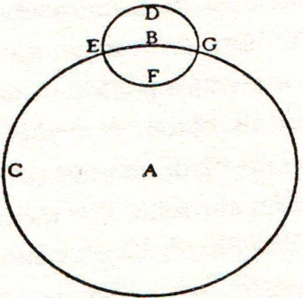
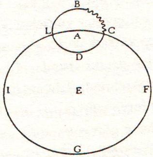
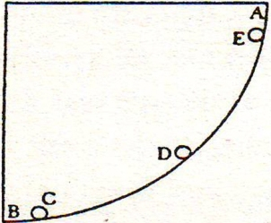
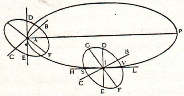

Sagredo – Bizim sürdürmekte olduğumuz malum fikir sohbetlerine katılmak için gelişinizde bilmem diğer günlere kıyasla bir gecikme oldu mu, yoksa Bay Salviati’den böylesi merak uyandırıcı bir konudaki düşüncelerini bir an önce öğrenme isteğinden midir nedir, dönüşünüz epey gecikti. Sizi almaya gönderdiğim gondol ne zaman belirecek karşımda diye bir kocaman saat boyunca pencere önünde oturup bekledim dakikaları sayarak.
Salviati – Sanırım, aslında benim gecikmemden çok sizin zihninizdeki olaylar zamanı uzatmış. Daha fazla uzatmamak için araya başka sözcükler katmadan hemen olguya dönelim ve doğanın, çok uzun zaman önce, bu olgu Yerküre’nin işidir der gibi sunduğu, deniz açısından hiç de umursamadığı gelgit olgusuna ait hareketlerin, şimdi tam hakkıyla denizin kendisine ait bir iş olarak kabul görmesine nasıl izin verdiğini (ya olgu gerçekten öyledir diye ya şakacıktan ya da bizim kurduğumuz hayallerle dalga geçmek için) ve eski bir hesabın karşılığını verircesine aynı gelgit olgusunun Yerküre’nin hareket sahibi kılınmasında onaylayıcı rol almak için sahneye çıkışını gösterelim; Yerküre’nin o hareketi ki göstergeleri şimdiye dek gökyüzü cisimlerinin görünüm değişiklikleri gözlemlenerek deşifre edilmeye çalışılmıştır, çünkü yeryüzündeki olgulardan hiçbiri muktedir değildi, o tarafı ya da bu tarafı haklı çıkarma kararını vermeye. Nitekim, Yerküre’deki olguların, alışıldığı üzere Yerküre hareketsizdir ve Güneş hareketlidir yönünde olduğunu uzun süredir incelemiş bulunuyoruz: İncelememiz sırasında, görünürdeki olguların Yerküre’yi hareketli Güneş’i hareketsiz kabul etmemiz haline de uyduğunu gördük. Yalnızca su elementi, zincire vurulmuşçasına toprağa bağlı bulunmayan engin alan olarak ve hakkıyla serbesti sahibi durumunda, Evren’in Aykubbesi altına rastlayan şeyleri arasından yalnızca o bize bir gösterge ve belirti temin edebilir diye düşündük, Yerküre’nin hareket ya da hareketsizlik bakımından neler yaptığına ilişkin olarak. Suların hareketlerinde gözlemlenen olguların etkilerini ben görmüş ve kısmen de başkalarından dinlemiş olarak kendi kendime bu etkileri inceledikten ve bu gibi olgular dolayısıyla edilmiş boş lafları duyup bu konuda bazı şeyler de okuduktan sonra, şu iki sonucun beni pek de hafif sayılmayacak bir çekicilikle cezbettiğini kabul ettim: Fakat bu iki sonuca yönelmeden önce de gerekli varsayımları önüme katmış bulunuyordum. Kendi kendime şöyle düşündüm: Eğer Yerküre hareketsiz duruyorsa deniz gelgit yapamaz ve eğer bu Yerküre daha önce söylediğimiz hareketlere sahipse Yerküre’ye ilişkin gözlemlenmiş olan şeylere uygun olarak denizin gelgit buyruğuna uyması gerekir.
Sagredo – Ortaya koyduğunuz öneri yalnızca proje olarak değil, bundan çıkacak sonuçlar açısından da muhteşem; bu nedenle sizin yapacağınız açıklamayı ve bunun teyidi niteliğindeki sözleri büyük bir dikkatle dinleyeceğim.
Salviati – Doğa olgularını incelerken, ki incelemek üzere ele aldıklarımızdan biri de bu gelgit olgusudur, etkilerin bilinmesi, o etkilerin nedenlerinin araştırılmasına ve bulunmasına götürür bizi ve bu bir nedene dayanmadıkça gittiğimiz yolda körler gibi yürüyor sayılırız, hatta daha güvensiz yürürüz çünkü onlar, hiç olmazsa nereye gitmek istediklerini bilirler; bundan ötürü her şeyden önce nedenlerini aradığımız etkileri bilgi çerçevemiz içine almalıyız: Bu etkiler hakkında bilgi muhakkak ki en çok sizde vardır, Bay Sagredo. Çünkü gelgit olaylarının hem de en geniş çaplılarının olduğu Venedik’te doğdunuz, hayatınızın büyük bir bölümünü Venedik’te geçirdiniz, üstelik Suriye’ye gidip geldiniz ve dikkat, merak sahibi zeki bir insan olarak epey gözlemlerde bulunmuşsunuzdur. Oysa ben Adriyatik Denizi’nin bu ucundaki gelgit olaylarını kısa süreler için geldiğim Venedik’te izleyebildim ve daha güneyde, Tiren Denizi sahillerinde de inceledim ama buradaki olguların bağlantılı olmaları nedeniyle hepsi arasında bir ilişki kurmak gerekir; gerekir ama bu ilişkilerin genellikle birbiriyle uyum içinde olmaması ve dolayısıyla kesinlikten uzak bulunmaları nedeniyle bizim yürüteceğimiz fikirlere teyit yerine karmaşa getirebilir. Bununla beraber, elimizdeki bilgiler, hem güvenli hem de birincil bilgiler olduğundan gerçek ve asıl nedenlere ulaşmamızı sağlayacak niteliktedirler. Elime yeni geçebilecek olan, bu nedenle de daha önce üzerinde düşünülmemiş olunabilecek tüm nedenleri de ortaya koyuyorum iddiasında bulunma küstahlığından kendimi tenzih ederim. Şimdi önermek üzere olduğum şey yalnızca bir anahtar niteliğindedir, şimdiye dek başkaları tarafından ayak basılmamış bir yola açılan kapının anahtarı. Eminim ki benden daha dikkat ve merak sahibi kişiler, benim bu keşfimle açtığım yolu genişletecekler ve ileri gideceklerdir ve bizim Akdeniz’den uzak başka denizlerde Akdeniz’deki olgulara rastlanmayacak olsa bile, bu benim öne süreceğim gerekçenin ve nedenin gerçek olmasını engellemez bizim denizlerimizdeki olgularla tamamen bağdaştıkça; çünkü aynı türden etkileri doğuran nihayet bir tek nedendir. Ben doğru bildiğim olguların öyküsünü anlatacağım, benim gerçek diye bildiklerimin değerini bilsinler ve beyler, siz de bildiklerinizi benim bildiklerimin yanına koyunuz, ardından benim ortaya koyduğum nedenin onlarınkiyle uyuşup uyuşmadığına, onları tatmin edip etmediğine bakalım.
Ben deniz gelgitlerinde gözlemlenen periyodların üç olduğunu söylüyorum. Bunlardan ilki ve başlıcası çok bilinir ve günlük olanıdır. Buna göre birkaç saat arayla sular kabarır ve alçalır; bu zaman araları Akdeniz’de yaklaşık 6 saatten 6 saatedir yani 6 saat içinde sular kabarır 6 saat içinde alçalır. İkinci periyot aylıktır ve Ay’ın hareketinden kaynaklanıyora benziyor; Ay başka yeni hareketler getirdiğinden değil fakat Güneş karşısında dolunay, hilal ya da dördün durumunda oluşuna göre sözünü ettiğimiz hareketlerin büyüklük derecesini değiştiriyor. Üçüncü dönem yıllıktır ve Güneş’e bağlı bulunuyor gibi: Şöyle ki günlük gelgit hareketlerinin büyüklük derecesini gündönümü (Solstice) zamanlarında ve gün-tün eşitliği (ekinoks) zamanlarında değişikliğe uğratıyor.
Önce günlük dönemden söz edeceğiz, çünkü birincil derecede olan budur ve Ay’la Güneş’in aylık ve yıllık değişikliklerle ikincil derecede etki sahibi oldukları anlaşılıyor gelgit olgusunda. Saatine göre gerçekleşen bu değişmelerde üç farklılık beliriyor: Şöyle ki bazı bölgelerde sular ilerleme hareketine girişmeden yükselip alçalıyorlar; bazı yerlerde yükselmeden ve alçalmadan kâh doğuya kâh batıya doğru ilerliyorlar; bazı yerlerde de burada Venedik’te olduğu gibi, hem yükseliyor hem de seyri değişiyor; Venedik’te sular gelirken yükseliyor giderken alçalıyor. Bu gelgit olgusu, batıdan doğuya doğru yayılan ve kumsallarda son bulan körfez boylarının uçlarında görülüyor; sular yükselmek için bu kumsal kıyılarda yayılma imkânı buluyorlar. Eğer seyirleri dağlar ya da çok yüksek setler tarafından kesilse buralarda ilerlemeyi durdurarak yükselir ve alçalırlardı. Bir de Sicilya’nın Messina Boğazı’nda Scilla ve Cariddi arasında sular hiç yükselmeden boğazın orta bölümlerinde bir oraya bir buraya koşuşturuyor; burada sular kanalın darlığı nedeniyle çok hızlı akıyor; fakat daha açık denizlerde ve orta bölümdeki adalar çevresinde, örneğin Korsika, Sardinya, Elba, Balear Adaları, Sicilya’nın Afrika tarafı, Malta, Girit vb. buralarda suların yükselme miktarı çok azdır fakat akıntılar çok belirgindir ve özellikle adalar arasında kalan ya da adalar ve kıta arasında mesafenin daraldığı yerlerde akıntı çok fazladır.
Yalnızca bu sözünü ettiğim gerçek ve kesin etkilerden başka etkiler görülmese bile, doğa koşullarının sınırları içinde kalmak isteyenler açısından büyük bir ihtimalle bu etkiler Yerküre’nin hareket ettiğini kabule ikna olurlar; nitekim Akdeniz havzası içindeki suyun yaptığını yapması karşısında suyun içinde bulunduğu kabı hareketsiz saymak, benim hayal gücüme sığmadığı gibi bu konuda fikir yürütmek isteyenlerin hayal gücüne de sığmaz; meğer ki konuyu üstünkörü ele alıyor olsunlar.
Simplicio – Bu olgular, Bay Salviati, şu anda başlamış değiller; çok eski ve eski çağlardan beri sonsuz sayıda kişi tarafından gözlemlenmişlerdir ve bunların çoğu da kimi şu kimi bu olmak üzere, nedeni açıklama konusunda celallenmişlerdir. Bizim bulunduğumuz bu yerden fazla uzakta oturmayan bir peripatetikçi, Aristoteles’in yeni ortaya çıkarılan ve yorumcuları tarafından pek iyi anlaşılmadığı söylenen bir metninde, gelgit olgusunun gerçek nedeninin denizlerin farklı derinliklerinden ileri geldiği görüşüne yer verildiğini söylüyor: Çok derin suların miktar bakımından fazlalığı ağırlığa yol açtığından daha az derin sulara baskı yapıyorlar ve kabaran bu sular daha sonra düzeylerini alçaltmaya yöneliyorlar. Bu sürekli çatışmadan gelgit olayı meydana geliyor. Öte yandan gelgit olgusunu Ay’a bağlayanların sayısı da az değil; bunlar Ay’ın sulara hükmü geçiyor diyorlar. Son olarak da bir rahip[148] tezini yayınladığı bir kitapçıkta Ay’ın gökyüzünde dolanırken kendisine doğru bir su yığını kaldırdığını ve bu su yığınının Ay’ı sürekli izlediğini ve yükselmiş denizin bu nedenle hep Ay’ın bulunduğu yerin altında belirdiğini söylüyor; Ay ufkun altına geçtiğinde, buna rağmen suların yükselmesinin etkisini açıklamak üzere şöyle diyor: Ay, bu etkiyi doğurma yetisini doğal olarak kendinde taşımaktan[149] başka, bu haliyle, karşısına düşen zodyak derecesine de yetisini iletebiliyor. Bazıları da sanırım biliyorsunuzdur, Ay’ın ılımlı sıcaklığıyla suyu inceltme yetisine sahip olduğunu ve incelen suyun kabardığını söylüyorlar. Bu arada şunu söyleyenler de...
Sagredo – Lütfen Bay Simplicio, daha fazla anlatmayın, çünkü bunları aktarmanız için vakit yetmeyeceği gibi bu görüşleri reddetmek için de vakit yetmeyecek; eğer siz bu hafifliklere ya da benzerlerine kulak verecek olursanız temiz olduğunu bildiğimiz hükümlerinize haksızlık edeceksiniz.
Salviati – Ben, Bay Sagredo, biraz çabuk feveran eden bir yapıya sahip olduğumdan, eğer o, anlattığı şeylerde olasılık görüyorsa diye cevap için elli kelime harcayacağım. Hemen şunu söyleyeyim: Dış yüzeyleri kabarık olan sular, Bay Simplicio, altlarındaki daha alçak suları iterler; bu etkiyi yapan derinliği fazla olan sular değildir; en yüksektekiler en alçaktakileri ittiler mi kısa sürede sakinleşiyorlar ve denge durumuna giriyorlar. Sizin bu peripatetikçi, sakin durumdaki tüm göllerin ve gelgit olgusunun fark edilmeyecek gibi, denizlerin hepsinin yataklarının eşit olduğu inancında herhalde ve ben de iskandil için başka alet olmadığına inanma saflığına kanıp su yüzeyi üstüne çıkan adaların deniz dipleri eşitsizliğine belirti sayma saflığına kapılacaktım az daha. O rahibe, Ay’ın her gün Akdeniz üzerinden geçtiğini fakat suların ancak doğu uçlarında ve burada Venedik’te yükseldiğini söyleyiniz. Ilımlı ısısıyla Ay’ın suları kabarıklaştırmaya yaradığını söyleyenlere deyin ki içi su dolu bir kazanın altını yaksınlar ve su ısınıp bir parmak yükselinceye dek sağ ellerini kazanda tutsunlar, sonra da o elle denizin kabarmasına ilişkin izlenimlerini yazmaya çalışsınlar; ya da şunu sorunuz, acaba Ay, suların neden bir bölümünü ısıtıp inceltiyor da geri kalan kısmına aynı şeyi uygulamıyor, bunu öğretsinler bize: Örneğin neden Venedik sularını kabartıyor da Napoli, Cenova, Ancona sularını kabartmıyor, bize öğretsinler. Şair ruhlu dehalar, demek iki tür oluyor: Bazıları hikâye icat etmeye yatkın ve alışkın; diğerleri de inanmaya müsait olanlar.
Simplicio – Ben sanmıyorum ki insanlar hikâye olduklarını bile bile hikâyelere inansınlar: Gelgit olgusunun nedenleri hakkındaki kanaatların çok olduğunu görüyorum; bir etkinin ancak bir tek birincil ve gerçek nedeni olabileceğini bildiğimden, diğerlerinin hikâye ya da masalsı olması gerekiyor. Belki gerçek olanı da şu ana dek anlatılanlar arasında geçmemiştir: Hatta böyle olduğuna gerçekten inanıyorum çünkü bu kadar sahte öneriler arasında kendini belli edecek kadar ışık saçması gerekirdi gerçek olan önerinin. Fakat aramızdaki tartışma geleneği bakımından müsaade edilen kadarıyla şunu söylemek isterim ki Yerküre’nin hareket ettiği görüşünü bu olay nedeniyle araya sokup ve onu gelgit olgusunun nedeni olarak sunmak, şimdiye kadar duyduklarımdan daha az masalsı değil ve doğa olgularına daha uygun nedenler sunulmazsa bana, gelgit olgusunun doğaüstü bir etki olduğunu hiç karşı koymadan kabul ederdim. Böylece mucizevi ve insan zihninin süzgeci tarafından diğer birçok ve sonsuz sayıdaki şeyler gibi incelenemeyecek bulur, büyük ve her yerde hazır ve nazır Tanrı elinin işi olan bir şey kabul ederdim.
Salviati – Siz çok tedbirli ve Aristoteles öğretilerinin kalıbına uygun konuşuyorsunuz: Aristoteles, biliyorsunuz, Mekanik Sorunları adlı kitabının başlangıcında mucizeye bırakıyor nedenleri açıklanamayan şeyleri: Gelgit olgusunun gerçek nedeninin anlaşılamayacak olduğu ifadesi karşısında şunu söylemeliyim ki şu ana kadar gerçek nedenler olarak önümüze sürülenlerden hiçbiri, hangi beceriye başvurulursa vurulsun, gözlerimiz önüne serilen etkiyi yaratamaz; şöyle ki ne Ay’ın ışığı ile ne de Güneş’inkiyle, ne ılımlı sıcaklarla ne de suların farklı derinliklere sahip olmasıyla hareketsiz bir kaptaki su, beceriler sayesinde yükselir, oraya buraya koşturulur ve ne de bir yerde sular yükseltilip alçaltılabilirken diğer bir yerdeyse bundan eser görülmez. İyi ama, herhangi bir beceriye başvurmaksızın, hatta sadece ve sadece kabı hareketli kılmak suretiyle deniz sularında gözlemlediğimiz bütün o değişme durumlarını pundu punduna gösterebilirsem, siz önümüzdeki nedeni niçin redde kalkışıyorsunuz da mucizeye başvurmak istiyorsunuz?
Simplicio – Nedeni, doğaya dayalı başka gerekçeler öne sürerek değil de yalnızca deniz sularını ihtiva eden kapların hareketini neden olarak gösterirseniz mucizeye başvurmak istiyorum, çünkü biliyorum ki bu kaplar kımıldamıyorlar, çünkü tümden Yerküre’nin kendisi doğa gereği hareketsiz durmaktadır.
Salviati – Peki siz, Yerküre’nin doğaüstü bir güçle yani Tanrının mutlak gücüyle hareket ettiriliyor olabileceğine inanmıyor musunuz?
Simplicio – Şüphe eden var mı ki?
Salviati – Öyleyse Bay Simplicio, madem ki denizin gelgit olgusu için araya bir mucize katmaya gerek var, mucizevi olarak Yerküre’yi hareket ettirelim, onun hareketinden ötürü de doğal biçimde deniz hareket etsin: Bu işlem, mucizevi işlemler arasında o kadar yalın ve doğal olacaktır ki dönüyor olduklarını gördüğümüz bir yığın küreden birini daha döndürmeye başlatmak kadar yalın ve doğal olacaktır ve muazzam bir su yükünü ileri-geri oynatmaktan, bazı yerlerde çok bazı yerlerde az ve bazı yerlerde de hiç olmak üzere yükseltmek ve alçaltmaktan daha kolay olacaktır: Üstelik tüm bu değişiklikleri suyu ihtiva eden aynı kapla yapmak mümkün. Düşünün ki bunlar birçok mucizeden ibaret, oysa Yerküre’yi döndürmek yalnızca bir tek mucizeyi gerektiriyor. Bir de şunu hatırda tutmak gerekir, suyu oynatma mucizesi, peşinden bir mucize daha getiriyor, bu da suyun itme darbelerine karşı Yerküre’yi sallantısız tutabilmektir; eğer deniz dalgaları, sahillere dövme darbeleri indirmekten mucizevi bir şekilde alıkonmasa, dalgalar Yerküre’yi bir o yana bir bu yana sallama gücünü sergilerdi.
Sagredo – Lütfen Bay Simplicio, Bay Salviati’nin bize açıklamak istediği yeni kavramı boş bir fikirden ibarettir diye hükme bağlamayı biraz askıya alalım ve diğer eski gülünç görüşlerin yanına, aynı demetin içine sokmayalım: Mucizeye gelince, ona başvuralım ama ancak doğa çerçevesi dahilinde yer alması gereken düşünceler silsilesini dinledikten sonra başvuralım; kendi fikrimi söyleyecek olursam, benim anlayışıma göre doğanın ve Tanrının tüm eserleri bana mucizevi geliyor.
Salviati – Ben de aynı fikirdeyim ve gelgit olgusunun doğal nedenini Yerküre’nin hareketine bağlamak bunu mucizevi bir olgu olmaktan uzaklaştırmaz. Ortaya koyduğum düşünce silsilesini tekrar ele alarak cevap veriyor ve teyit ediyorum ki bizim Akdeniz havzasındaki suların yaptığına tanık olduğumuz hareketleri, su kabı hareketsiz olunca, nasıl yaptığını açıklayıcı neden meçhuldü. Zorluk çıkaran ve bu sorunu içinden çıkılmaz duruma getiren, az sonra anlatacağım ve her gün gözlemlemeye müsait şeylerdir. Şimdi söyleyeceklerime dikkat ediniz.
Venedik’teyiz, şu anda sular çekilmiş durumda, deniz durgun ve hava sakin: Sular yükselmeye başlıyor ve 5 ya da 6 saat içinde on parmak kadar yükseliyor hatta biraz da fazla on parmaktan. Bu yükselmeyi, hani inceldiği söylenen o ilk su yapmıyor fakat yeni gelen su yapıyor; daha önceki suyun aynı türünden, aynı tuzlulukta, aynı yoğunlukta, aynı ağırlıkta: Tekneler, Bay Simplicio, daha önce ilk suda olduğu gibi yüzüp sallanıyorlar suyun bir kıl payı kadar bile üstüne çıkmadan; gelen yeni suyun bir varili, daha önceki ilk suyla doldurulmuş varilden bir buğday tanesi kadar bile daha ağır değil; soğukluk derecesi aynı, hiçbir fark yok. Bu su, Lio ağzından ve kanallarından yeniden ve görülür biçimde geliyor. Şimdi siz bulun ve bilin bakalım, nereden geldi bu su. Acaba buralarda, deniz dibinde su emen ve sonra da kocaman balinalar gibi püskürten hortumlar mı var? Şayet böyle bir durum varsa neden 6 saat içinde su benzer biçimde Ancona’da, Ragusa’da, Korfu’da yükselip alçalmıyor, gelgit olgusunun neredeyse fark edilmeyecek kadar asgari olduğu bu yerlerde? Hareketsiz duran bir kabın yalnızca bir bölümünde suyun yükselip diğer bölümlerinde yükselmeyecek şekilde kaba su vermek ne mümkün? Acaba bu yeni su okyanustan Cebelitarık Boğazı aracılığıyla sağlanıyor mu diyeceksiniz? Bu da daha önce sözü edilen zorlukları gidermez ve daha büyük yeni zorluklar getirir. Her şeyden önce şunu söyleyin bana: O suyun nasıl bir seyri olmalı ki boğazdan girerek 6 saatte Akdeniz’in en uç kıyılarına iki ya da üç bin millik mesafeyi kat edip varsın ve geri dönmek için de aynı mesafeyi kat etsin? Denizlere yayılmış tekneler ne yapacaklar bu durumda? 8 milden daha geniş olmayan bir boğazdan girip, 6 saatte, genişliği yüzlerce mil ve uzunluğu binlerce millik bir alana su yetiştirmek için geçecek olan muazzam su kütlesinin yarattığı uçurumda gemiler nasıl barınabilirler? Hangi kaplan, hangi şahin bu kadar hızlı koşmuş ya da uçmuş olabilir? Saatte 400 aşan hız gerekir sulara. Körfez uzunluğu boyunca akıntılar var ama öylesine yavaş ki bu akıntıları kürekli kayıklar geçebiliyor bazen onlara zarar verse de. Ayrıca şöyle düşünmek gerekir: Bu sular boğazdan geliyorsa burada, bu kadar uzak yerde suları böylesine yükseltiyor da buradaki yükselmeden önce orada, daha yakın yerlerde suları neden yükseltmiyor? Özet olarak diyeceğim şu ki bu zorlukların altından ne ısrarla ne de zekâ inceliğiyle kalkılamaz ve sonuçta ne de Yerküre’nin hareketsizliği desteklenebilir bu olguya karşı; elbet doğa gereği koşullar çerçevesinde düşünerek.
Sagredo – Deminden beri dinliyor ve söylediklerinizi anlamış olarak hayranlık yaratan bu olguların, Yerküre’ye dönüyor olduğu statüsü tanınarak, nasıl açıklığa kavuşturulabileceğini öğrenme merakıyla bekliyorum.
Salviati – Anlatılan sonuçların, Yerküre’nin doğal olarak sahip olması gereken hareketlerinden kaynaklanması icap ettiğinden, zihinlerde bir engele ya da redde takılması diye bir şey olmaz; gelgit olgusu Yerküre hareketliliğinin bir sonucu olarak rahatlıkla kabul edilmelidir. Yalnızca rahatlıkla değil, bir şart olarak kabul edilmeli çünkü gelgit olgusu ancak Yerküre’nin hareketliliğinin sonucudur, başka türlü olamaz; çünkü doğa olgularının özelliği ve koşulları bunu gerektirir. Demek ki sularda görülen hareketlere bir gerekçe ararken aynı zamanda bu suları ihtiva eden kabın hareketsizliğini savunmanın imkânsızlığını belirledikten sonra, bakalım şimdi kabın hareketli kabul edilmesi üzerine gördüğümüz olgular, bu kabulün ışığı altında sonuçları açıklamaya yetecek mi?
Bir kabın bulundurduğu suyun kapta bir o uca, bir bu uca gitme yetisi kazanarak burada kâh yükselip kâh alçalmasının mümkün olması için, o kaba iki çeşit hareket tanımak gerekir. Bunlardan biri, kâh bir ucun kâh diğer ucun alçalmasıdır çünkü o zaman su eğik tarafa doğru gittiğinden karşılıklı olarak şimdi burada sonra orada yükselmesi ve alçalması gerekir. Fakat bu yükselme ve alçalma Yerküre’nin merkezinden uzaklaşmayı ve ona yakınlaşmayı ifade ettiğinden, suyun bu hareketi Yer’in oyuklu oluşuna bağlanmaz. Bunlar, suları ihtiva eden kaplar olup bunların kısımları, Yerküre’ye nasıl bir hareket atfedilirse atfedilsin, Yerküre’nin merkezinden ne uzaklaşabilirler ne de ona yaklaşabilirler. Kaba tanınan iki çeşit hareketten ikincisi kabın, hiç eğilmeden, düzgün hızla değil de hız değiştirerek, bazen hızlanıp bazen yavaşlayarak ilerlemesi halidir: Bu hızlanma, yavaşlama hali farklarından kabın içindeki su, akışkanlığı nedeniyle yapışık olmadığı kabdan serbest ve ayrı olarak ve kendisini sinesinde bulunduran kabın hareketindeki tüm değişikliklere uymak zorunluluğunu duymadığından, kap yavaşlayınca, önceden sahip bulunduğu hızın bir kısmına sahip bulunarak öne doğru gider ki burada mecburen yükselecektir. Buna karşılık kaba yeni bir hız artışı verilince, su az önceki yavaşlığının bir kısmına sahip bulunarak azıcık geride kalır, yeni hıza henüz ulaşamadan geriye kaçar ve geri bölümde epey yükselir: Biz bu etkileri, insanların duyularına açıkça sunabilir ve anlatabiliriz: Örnek olarak, kent insanlarının kullanımına sunmak için içecek su taşıyan Lizzafusina kayıklarının durumunu gösterebiliriz. Bu kayıklardan birinin Laguna sularından orta dereceli bir hızla geldiğini ve kente getirdiği suyun kayıkta sakin sakin taşındığını düşünelim. Fakat bir ara, dibe vurduğundan mı yoksa çıkan bir engelden mi, bir hayli yavaşlasın. Kayığın yavaşlaması yüzünden su, sahip bulunduğu önceki hızını kaybetmeyecektir ve fakat o hızı sinesinde saklı tutarak öne doğru gidecektir ve suyla dolu olan kayığın ön tarafına koşan su ön tarafta yükselecektir; bu arada kayığın arka tarafında da su alçalacaktır. Ama eğer yolculuk sırasında kayığa birden yeni hız eklenirse kayığın içindeki su yeni hıza alışmadan önce sahip olduğu yavaşlıkla geride kalacak yani kıç bölümündeki su yükselecektir ve pruva tarafındaki su alçalacaktır. Anlattığımız bu etki, şüphe götürmez, açık seçik bir etkidir ve her saatte gözlemlenebilir; bu harekette şimdilik üç özelliğe dikkat edilmesini istiyorum.
Birincisi şu: İçinde su bulunan bir kabın uç bölümündeki suyu yükseltmek için yeni bir ekleme yapmaya gerek olmadığı gibi uçtan geri dönerken de ihtiyaç yoktur yeni su eklemeye. İkincisi, orta yerdeki su fazla yükselip alçalmıyor. Verdiğimiz örnekte kayığın çok hızlı gittiğini var saymadığımız gibi çıkan engelin ya da toslamanın pek sert olmadığını düşünüyoruz; zaten böyle bir durumda kayığın içindeki su yalnızca öne gidip yükselmekle kalmaz, bütün su kayıktan dışarı da fırlayabilir. Aynı şey kayık yavaş giderken birdenbire hız verildiğinde de olur.
Kayık sakin giderken orta derecede bir hız eklenirse orta bölümdeki sular, söylemiş olduğum üzere, pek az yükselir ve pek az alçalır; suların diğer bölümü de orta bölüme yakınlıkları oranında az kımıldar, uzaklığı oranında daha çok kımıldar. Dikkat edilmesini istediğim üçüncü nokta, uç bölümlerdeki suların çok yükselip alçalmasına kıyasla az kımıldayan orta bölümdeki suların ileri-geri hareketlerinin fazlalığıdır. Şimdi, Sayın Beyefendiler, kayığın içinde bulundurduğu suya yaptığını ve kayıktaki suyun kayığa yaptığını, kap olarak düşüneceğiniz Akdeniz havzasının deniz sularına yaptığını düşüneceksiniz ve elbet deniz sularının da içinde bulundukları kaba yaptıklarını: Bu yaptıkları kıl payı kadar fark etmemecesine aynıdır. Şimdi bize, Akdeniz’e ve diğer havzalara, kısacası Yerküre’nin tüm kısımlarına düzenli ve düzgün olmayan hiçbir hareketle malul olmadığı gözüyle bakılmasına rağmen, aslında farklı ve şekilde görüldüğü gibi cinsten olmayan hareketlerden geçtiğini göstermek düşüyor.
Simplicio – İlk bakışta, bana bu bir paradoks gibi geliyor; gerçi ben ne bir astronom ne de matematikçiyim. Paradoks gibi gelmesinin nedeni şu: Tümün hareketi düzgünse kısımların bütüne her zaman bağlı olması gerçeği karşısında düzgün olmayabileceklerinin söylenmesi paradokstur ve “bütüne ve bütünün kısımlarına ait kural aynıdır” belitini paradoks mahveder.
Salviati – Ben bana ilişkin paradoksu kanıtlayacağım ve size de Bay Simplicio, beliti paradokstan koruma görevi ya da onları bağdaştırma işi düşecek; benim kanıtlama süreci kısa sürecek, kolay da olacak çünkü daha önceki konuşmalarımızda uzun uzadıya ele aldığımız mantık silsilesine bağlı ayrıca gelgit savunması için tek bir hece harcamayacağım fazladan.
Yerküre’nin iki harekete sahip olduğunu söylemiştik: Birincisi yıllık hareket olup bu hareketi, burç görüntüleri düzenine uygun ekliptikte yani batıdan doğuya doğru Büyük Yörünge çevresi boyunca yapmaktadır; diğer hareketse yine Yerküre tarafından kendi merkezi etrafında dönerek 24 saatte yaptığı dönme hareketidir ve bunu da yine batıdan doğuya doğru dönerek yapmaktadır. 24 saatlik kendi etrafında yaptığı dönme hareketinin ekseni epey eğik olup Büyük Yörünge etrafında yaptığı yıllık hareketin eksenine eşit uzaklıkta değildir. Her biri kendi başına düzenli olan bu iki hareketin bileşiminden Yerküre’nin kısımları için düzensiz bir hareket oluştuğunu söylüyorum şimdi size: Bunu anlatmak için bir şekil çizeceğim. İlk olarak A merkezi etrafında Büyük Yörünge BC çevresini çiziyorum ve bu çevrede istediğim herhangi bir B noktasını alıyorum. B’yi merkez olarak alıp bu nokta etrafında DEFG harfli küçük çemberi çiziyorum: Bu DEPG çemberi Yerküre olsun. Yerküre B merkeziyle Büyük Yörünge’nin tüm çevresini batıdan doğuya olmak üzere dolanıyor, yani B’den C’ye doğru. Bundan başka Yerküre’nin kendi B merkezi etrafında 24 saatte yine batıdan doğuya doğru yani D, E, F, G harfleri sırasıyla döndüğünü düşünelim. Fakat burada dikkat etmemiz gereken şey, bir çemberin kendi etrafında dönerken kısımlarının değişik zamanlarda zıt hareketlerle devindiğidir: Belli ki D noktası yakınındaki çevre kısımları sola yani E’ye doğru dönüş yaparken karşıt F kısımları sağa yani G noktasına doğru hareket ediyorlar. Öyle ki D kısımları F’ye geldiklerinde onların hareketi daha önce D’de bulundukları sıradaki hareketin zıddıdır; ayrıca E kısımları F’ye doğru, söz gelimi, inerlerken G kısımları D’ye doğru çıkıyorlar.
Yerküre kendi merkezi etrafında döndüğü sırada Yerküre yüzeyinin kısımlarında bu zıtlık bulunduğuna göre, bu günlük hareketle diğer yıllık hareketi eşleştirirken yüzeyin kısımları için şimdi hızlanmış sonra yavaşlamış bir bileşik hareket söz konusu olması zorunludur. Bu bileşik hareket şundan ileri geliyor: Önce D etrafındaki kısma bakarsak burada bileşik hareket çok hızlıdır çünkü aynı yöne yani sola doğru mevcut iki hareketten doğuyor; bu iki hareketten biri yıllık hareketin bir parçasıdır ki kürenin tüm kısımları için ortaklaşadır, ikili hareketin diğer parçasıysa D noktasının kendisine aittir, bu da sola doğru harekettir, günlük hareket nedeniyle; böylece günlük hareket bu durumuyla yıllık hareketi artırıyor ve hızlandırıyor; bunun tersi de karşıt nokta olan F’de beliriyor.

l 27- Merkez A noktası etrafına BC Büyük Yörünge çevresini çizen Galileo herhangi bir nokta olarak B’yi alıp bunun etrafında DEGF dairesini çiziyor. Bu küçük daire Yerküre’mizdir. Yerküre’miz, Büyük Yörünge boyunca hareket halindedir. Merkeziyle yaptı€ı hareketi batıdan do€uya do€rudur: DEFG yönünde. DGEF hareketini göz önünde tutarsak Yerküre çevresinin D noktasındaki kısımlar sola yani E’ye do€ru dönerken, karşıtları olan F’deki kısımlar G’ye do€ru hareketi sürdürüyor durumdalar. Demek ki D kısımları F’ye varırken, bunların hareketleri daha öncekilerin tersi olmuş oluyor. Ayrıca, E kısımları, inişteyken diyelim (iniş F’ye do€ru), G kısımları da D’ye do€ru gidiyorlar, çıkış durumunda diyelim. Yerküremiz anlattı€ımız günlük hareketini gerçekleştirirken aynı anda yıllık hareketini icra etti€inden bu iki hareketin birbirine binmesiyle Yerküre çevresi hareketi bir hızlanmış bir hızı kesilmiş durumlar geçiriyor. Bunları anlatmakla Galileo Yerküre’nin denizlerindeki gelgit olgusunu Yerküre’mizin döndü€ünü kanıtlama yolunda kullanıyor.
Bu nokta, ortak olan yıllık hareket tarafından tüm küreyle sola doğru taşınırken, günlük hareket tarafından sağa doğru götürülüyor: Bu yüzden günlük hareket yıllık hareketten bir şeyler eksilttiğinden ikisinin bileşiminden meydana gelen mutlak hız yavaşlamış oluyor. Sonra E, G noktalarına gelelim. Bu iki nokta etrafında mutlak hareket yıllık hareketin kendisiyle eşitleniyor çünkü günlük hareket yıllık harekete hiçbir şey eklemiyor ve hiçbir eksiltme yapmıyor; yapsa da pek az yapıyor çünkü ne sağa ne de sola çekiyor fakat yalnızca aşağıya ve yukarıya çekiyor. Söylediklerimizin ardından konuyu sonuca bağlamak için şunu ekleyelim: Ya yalnızca yıllık hareket ya da yalnızca günlük hareket olsun, eğer Yerküre tek bir hareketle dönüyor olsaydı kürenin tümünün ve kısımlarının her birinin hareketi düzgün hıza sahip olurdu. Bu doğru olduğu gibi şu da doğrudur ki bu iki hareketin meczedilişiyle günlük hareketin yıllık harekete yaptığı artışlar ve eksilişler yüzünden, kısımlar için düzgünlükten çıkan hareketler düşüyor. Kabın hareketinin hızlanması ve yavaşlaması, uzunluğu boyunca suyu koşturuyorsa ve yeniden geri getiriyorsa, uç noktalarında yükseltip alçaltıyorsa bu etkinin aynısının deniz sularında olabileceğini hatta muhakkak olması gerektiğini kabul etmeye kim karşı çıkabilir?
Deniz sularını ihtiva eden kaplardan, özellikle uzunlukları batıdan doğuya doğru yani kapların dönüş yönünde olanların aynı değişikliklere tabi olduğunu kim kabul etmez? Gelgit olgusunun birincil ve güçlü nedeninin bu olması gerekir ve böyle olmasa gözümüzün önüne serilen olgular cereyan etmezdi. Fakat değişik yerlerde ve zamanlarda gözlemlenen özel birçok çeşitli olguya rastlandığından ve bunlar mutlaka birbiriyle bağlaşık çeşitli nedenlerden ileri geliyor olabileceğinden, hepsinin de birincil nedenle ilişkisi olması gerektiğinden, mesleğimizin gereği olarak bu etkilerin nedenlerinin hangileri olabileceğini incelemeyi sürdürerek açıklayacağım.
Bunlardan ilki şudur: Kabın hızının önemli derecede artması ya da eksilmesi söz konusu olduğunda kabın ihtiva ettiği su, uçlardan şu ya da buna doğru gitme nedeni elde etmiş oluyor ve böylece birinde yükselip diğerinde alçalacaktır. Ne var ki birincil neden ortadan kalkmış olsa bile bu durumda kalmaz su ve kendini dengelemeye doğru olan doğal eğilimi ve ağırlığı nedeniyle kendiliğinden hızla geriye dönecektir; ağırlık sahibi ve akışkan bir cisim olması dolayısıyla yalnız dengelenmeye doğru yol almayacak fakat sahip bulunduğu kendi hızıyla denge noktasını aşıp öteye yani az önce alçaldığı yeri doldurmaya yönelecektir; burada da durmayacaktır, yeniden geri dönecektir ve birçok ileri-geri gidiş gelişlerden sonra bize anlatmış olacaktır ki edinmiş olduğu hızdan hemen vazgeçmek ve istirahat haline geçmek istememektedir. İstirahat haline geçişi çok yavaş olmaktadır tıpkı sarkacın ipinden sarkan ağırlığı bir defa istirahat halinden yani dikey durumdan uzaklaştırdınız mıydı yeniden istirahat haline geçmek için misilleme hareketlerini sürdürerek defalarca gidip gelmesi, gelip gitmesi gibi.
Not edilmesi gereken ikinci olgu, suyu ihtiva eden kapların uzunluk durumuna göre sözünü ettiğimiz misilleme hareketleri büyük ya da küçük frekanslarla yani daha kısa ve daha uzun süre dilimlerinde yer alıyor ve kaplar küçükse misilleme hareketleri daha çabuk ve uzun kaplarda daha yavaş oluyor. Tıpkı sarkaçlarda olduğu gibi; ipi uzun olanların frekansı daha yavaştır, ipi kısa olanların frekansı daha hızlıdır.
Üçüncü olarak bilinmesi gereken şey, yalnızca kabın uzunluğu ya da kısalığı değildir, etken olan misilleme hareketlerinin hızına, kabın derinliği de etken oluyor. Eşit uzunlukta kapların ihtiva ettiği suların, farkı derinlikler nedeniyle daha derin olanın dengeleme hareketlerini daha kısa sürelerde gerçekleştirdiği görülüyor. Daha az derinlerdeyse suların misilleme hareketleri daha yavaş oluyor.
Dördüncü olarak not edilmeye ve titizce izlenmeye değer olan, suyu kendini dengeleme hareketindeki iki etkidir. Bunlardan biri, şu ya da bu uca doğru sırasıyla yükselip alçalmasıdır; diğeri de, yatay olarak diyelim, ileri ve geri gidip gelmesidir: Bu birbirinden farklı iki hareket, suyun değişik kısımlarında farklı olarak bulunuyor. Şöyle ki uç kısımları en çok yükselen ve alçalan bölümleridir; orta kısımları yükselme ve alçalma hareketi yapmıyorlar; diğer kısımlarsa derece derece uç tarafa yakınlıkları oranında uzaktakilerden daha çok katılıyorlar yükselme ya da alçalma hareketine. Fakat buna karşılık ileri-geri hareketleri çok yapıyor ortadaki kısımlar, uçtaki kısımlarsa bu harekete katılmıyorlar meğer ki yükselme fazlalığından set aşılır ve sular orta bölümden öne furya edip taşma ola. Fakat setin oluşturduğu engel frenleme görevi yapınca yalnızca yükselme ve alçalma hareketi icra ederler. Fakat ortadaki sular ileri-geri hareketi sürdürürler: Gerçi bu hareketi, belirli oranda diğer kısımlardaki sular da orta bölüme yakın ya da uzak oluşlarına göre yapıyorlar.
Beşinci özel olgu çok daha dikkatle ele alınmalı çünkü etkisinin deneyle ve pratik olarak ifade edilmesi imkânsızdır ve olay şudur: Bizim özel olarak ve titizce imal ettiğimiz ve yukarıda kayıklarla ilgili olarak anlattığımız hareketleri kâh daha hızlı kâh daha yavaş yaptırdığımız kaplarda hızlanmaya ve yavaşlamaya tüm kap ve kabın her bölümü katılıyor: Öyle ki kayığın hareketi yavaşlatılınca ön kısmın ya da arka kısmın yavaşlaması farklı olmuyor, ikisi de aynen katılıyor yavaşlama hareketine. Hızlanmada da aynı şey oluyor yani tekneye daha fazla hız eklenince ön tarafı da kıç tarafı da aynen hızlanıyor. Fakat çok büyük kaplarda, her ne kadar onlar da Yerküre’nin sert zemininde açılmış yataklar olmaları itibariyle birer kap iseler de onların uç bölümlerinde hareketin hızlanması ve yavaşlaması aynı zamanlarda, birlikte ve eşit derecede olmuyor. Bu büyük yataklarda iki uçtan birinin, günlük ve yıllık hareketin bileşiminden ötürü hareket hızı büyük ölçüde yavaşlamışsa diğer ucunun çok hızlı hareketi yani bileşik hareketin hızını, yaşamayı sürdürmesi söz konusu olmaktadır. Bunu daha iyi anlatabilmek için az önce çizdiğimiz şekli yeniden çizelim.

ekil 28- Galileo bu şekilde Yerküre yüzeyinin hemen hemen dörtte birini kaplayan büyük denizleri göz önünde tutarak daha önceki şekil dolayısıyla anlattı€ımız duruma dönüyor ve şöyle diyor: Denizin Yerküre yüzeyinin çeyre€ini kapladı€ını düşünelim şekildeki BC kavisinin gösterdiği gibi. Günlük hareketle yıllık hareketin birbirinin üstüne binmesi Yerküre’mizin hareketini bir hızlandıracak, bir yavaşlatacak. B’deki kısımlar hız kazanırken C’deki kısımlar yavaşlayacaktır. Yerküre’mizin B kısmı hız kazanırken D kısmı yavaşlamış olacaktır. Galileo, burada da, gelgit olgusunu Yerküre’mizin “hareket eder”li€ini kanıtlamak için, kitap boyunca ortaya döktü€ü kanıtlara ilaveten ele alıyor.
Eğer şekildeki BC yayı kadar yani dairenin dörtte biri boyunca deniz olduğunu kabul edersek B kısımları, daha önce anlattığımız nedenlerden ötürü, çok hızlı harekete sahiptirler günlük ve yıllık hareketin aynı yöne doğru birleşmesi nedeniyle; fakat C bölümü günlük dönme hareketinin verdiği hareketten yoksun olarak yavaşlamış hareketten maluldür. Elbet BC yayı kadar uzun yatak varsayıyoruz örneğimizde ve bu takdirde uç bölümlerinin aynı zamanda büyük eşitsizlikle hareket ettiklerini anlıyoruz. Eğer BCD yayı kadar uzun bir deniz parçası varsayarsak, B ucu çok hızlı harekete sahipken D ucundaki hareket yavaşlamış ve orta yerdeki C bölümünde hareketin hızı orta dereceyi bulmuş olacaktır. Yayın bölümleri ne kadar küçük olursa yani deniz yatakları ne kadar küçükse sözünü ettiğimiz müthiş olgudan, günün bazı saatlerinde hızlanma ve yavaşlama olgusundan, değişik biçimde etkilenme olgusundan daha az alacaklardır nasiplerini. Yaptığımız deneyle ilgili olarak aktardıklarımızda hızlanma ve yavaşlamaya kabın tüm taraflarının katıldığını ve suyun ileri-geri gittiğini söylemiştik. Bu durum karşısında böylesine mucizevi biçimde yaratılmış bir kapta, kısımlarına hızlanma ve yavaşlama hareketinin eşit olmayan biçimde bahşedilmiş olmasına ne demeliyiz? Şundan başka bir şey söylemeyiz: Suların hareket edişlerine ilişkin daha büyük ve hayranlık uyandırıcı ve garip olgular muhakkak vardır. Yapay kaplarda ve bu tür makinelerde böylesi bir olgunun etkileri deneye tabi tutulmasi imkânsız gibi görünse de buna rağmen diyorum ki böyle bir deney imkânsız değil; ben böyle bir makineyi yaptırmış bulunuyorum ki bu makinede o hayranlık uyandırıcı hareket bileşimlerinin etkisi izlenebiliyor. Fakat bu konuyla ilgili olarak olguları gözleriniz önüne getirip hayal gücünüzü de çalıştırarak düşünecekleriniz yeterli olur ve burada konuyu noktalıyorum.
Sagredo – Ben kendi açımdan, bu hayranlık verici olgunun denizlerde batıdan doğuya doğru yayılan uzun yataklar boyunca yani Yerküre’nin batıdan doğuya dönüyor olduğu seyirdeki yataklarda muhakkak görülmesi gerektiğini çok iyi anlıyorum; bu olgu bizlerce taklit edilmesi mümkün olan hareketlerden olmadığı için ve olguyu örnekleyemediğimizden, bizim yapay deneylerimizle bu gibi etkilerin yaratılamayacağına inanmak zor değil bence.
Salviati – Bu açıklamaları yaptıktan sonra suların gelgitinde deneye bağlı olarak gözlenebilen özel olguları ve onların farklılıklarını incelemeye geldi sıra. Önce şunu anlamakta zorluk çekmeyiz herhalde: Göllerde, bataklıklarda ve ufak denizlerde önemli bir gelgit olmaz. Bunun da ikna edici iki nedeni vardır: Bunlardan ilki, kabın kısalığı nedeniyle günün değişik saatlerinde değişik hız derecelerini her yanıyla edinemiyor; gerek ön gerek arka tarafları yani gerek doğu gerek batı bölümleri hemen hemen aynı şekilde hızlanıyor ve yavaşlıyorlar. Üstelik bu değişiklik yavaş yavaş olduğundan ve suyu ihtiva eden kapta bir engebe ve yavaşlatıcı engel ya da kabın hareketini birden çokça hızlandıracak bir durum olmadığından hem kap hem kabın her tarafı aynı hız derecelerinin etkisi altında bulunuyorlar. Bu tekdüzeliğin sonucu olarak kaptaki su da aynı etkiyi fazla karşı koyma hareketi göstermeden benimsiyor ve böylece yükselme ve alçalma işareti vermiyor bile. Yapay kaplardaki su da, ki bunlar da aynı hız derecelerinin etkisi altındadırlar, aynı şekilde etkileniyorlar, hızlanma ve yavaşlama yavaş ve düzgün hızla olduğu sürece. Oysa doğudan batıya büyük mekânları kaplayarak uzanan denizlerin yataklarında hızlanma ve yavaşlama çok daha belirgin ve tekdüzelikten uzaktır, çünkü yatağın uçlarından biri yavaşlamış bir hareketin etkisindeyken diğer ucu çok hızlanmış bir hareketin etkisindedir. İkinci neden, kabın aldığı hareketten gelen zorlama hareket üzerine suyun kendini dengeleme devinimidir; söylediğimiz gibi bu dengeleme hareketinin titreşimleri küçük kaplarda çok sıktır: Bundan şu sonuç çıkar ki sulara 12 saatten 12 saate hareket verme gücü kürenin hareketlerinde mevcut olduğundan, çünkü kapların hareketi en çok günde bir defa yavaşlıyor ve çoğalıyor, yine de suyun ağırlık sahibi cisim olmasından ötürü kendini dengelemesi nedeni vardır ve bu da kapların küçüklüğüne göre ya 1 saatlik ya 2 saatlik ya da 3 vb. mukabele süreçleri vardır, bu daha öncekiyle karışarak zaten küçük kaplarda etkinin hissedilmez derecede olması nedeniyle tamamen fark edilmez duruma gelir; ne var ki birincil nedenden ileri gelen 12 saatlik periyoda bağlı sallamanın etkisi sona ermediğinden, bunun üstüne suyun ağırlığından ileri gelen ikinci neden biner; bunun da kabın kısalığı ve derinliğine göre titreşim süresi l, 2, 3 ya da 4 saatliktir vb.. Birincil harekete muhalefet göstererek onu taciz eder ve ne onun kendine ait hareketinin zirvesine ne de orta derecedeki noktasına gelmeye meydan bırakır. Bu karşı koyma hareketi tarafından gelgitin belirginliği söner. Suları taciz eden havanın sürekli rahatsızlığın yaratmasını bir kenara bırakıyorum. Havanın verdiği rahatsızlık, uzunluğu bir ya da iki dereceden fazla olmayan yataklarda tam olarak yarım parmak ya da daha az yükselme ve alçalmaya etki yaptığı bile söylenemez.
İkinci nokta olarak şu kuşkuyu, Yerküre’nin hareketlerinden ötürü bir defasında hızın azami artışı, bir defasında da azami yavaşlamasından doğan birincil neden 12 saatten 12 saate belirmesine rağmen gelgit periyodunun 6 saatten 6 saate gerçekleşmesinin yarattığı şüpheyi gidereceğim. Bu durumu cevaplandırmak üzere bu zaman dilimlerinin yalnızca birincil nedenden ileri gelemeyeceği ve fakat ikincil nedenlerin de yani havzaların fazla uzunluğu ya da kısalığı ve bu havzalardaki suyun büyük ya da küçük derinliğe sahip olmalarının da etkilediğini hesaba katmak gerekir: Bu nedenler, suların hareketlenmesi için hiçbir etki sahibi değildirler çünkü suların hareketlenmesi yalnızca birincil nedene bağlıdır ve birincil neden olmadan gelgit diye bir şey olmaz, fakat suların karşılıklı etkilenişinde saat dilimlerini belirlemede rol oynamaktadırlar ve bu öyle güçlü bir roldür ki birincil neden bu rolün etkisinde kalmaktadır. Bu durumda 6 saatlik periyodlar, diğer zaman aralıklarından daha geçerli ve doğal değildirler fakat gözlemlerimizde karşımıza belki daha belirgin olarak çıkmaktadırlar bizim, Akdeniz’e özgü bir olgu olması ve uzun yüzyıllar bu denizin daha çok kullanılmış olması dolayısıyla. Ne var ki 6 saatlik periyod Akdeniz’in her yöresinde gerçekleşmez; Ege ve Karadeniz gibi daha dar bölgelerde periyodlar çok daha kısadır ve periyodlarda da farklar vardır. Farklılıkların çeşidi karşısında nedenlerini idrak edemeyen Aristoteles’in bu durumları uzun uzadıya kara köprünün bazı kayalıkları üzerinden izledikten sonra umutsuzluğa kapılıp denize atladığı ve hemen boğulduğunu söyleyenler var.
Üçüncü olarak, incelediğim konuya ait cevabın nedenini hemencecik anlamamız mümkün olacak çünkü Kızıldeniz gibi epey uzun olan denizlerde gelgit olgusu hiç yoktur. Gelgit olmamasının nedeni bu denizin doğudan batıya doğru uzanmış olmayıp konumunun güneyden kuzeye doğru olmasıdır: Yerküre batıdan doğuya doğru döndüğünden suların darbe vuruşları hep meridyenleri hedef alır ve enlemden enleme vurmazlar; bu yüzden kutuplara doğru transversal konumlu denizler bir de daracıksa gelgit için ortam oluşturmazlar. Ancak başka denizle irtibat halindelerse ve o deniz de büyük hareketlerin etkisindeyse o takdirde durum değişir.
Dördüncü olarak, körfezlerin uç kısımlarında gelgit olaylarının fazlalığının, suların çok yükselip alçalmasının ve orta bölümlerde de asgari derecede olmasının nedenini kolaylı
kla anlayabiliriz. Burada, Adriyatik Denizi’nin bir ucunda yer almış olan Venedik’te günlük deneyimlerimizde suların 5-6 adımlık (1,5-2 metre) yükselip alçaldığına tanık oluyoruz; fakat Akdeniz’de, uçlardan uzaktaki bölgelerde bu fark çok azdır; örneğin Korsika ve Sardinya adalarında, Roma ve
Livorno kıyılarında alçalma-yükselme arasındaki fark yarım ayak (yaklaşık 15 cm) kadardır. Yükselme ve alçalmaların az olmasına rağmen akıntılar ve karşı akıntılar fazladır. Bu olguların nedenlerini öğrenmek kolaydır çünkü imal ettiğimiz özel ve çeşitli kapları kâh hızlı kâh yavaş oynatarak aynı doğal gelgitleri izleyebiliriz.
Beşinci olarak, epey geniş bir su havzasından oldukça yavaş akan belirli miktardaki suyun daracık bir geçidi aşarken mecburen büyük bir hızla ve şiddetle akması, Sicilya ile
Calabria arasındaki boğaz akıntılarını anlamamızı sağlar. İyonya Körfezi ve adasının genişliğinden batıya yavaştan gelmesine rağmen Sicilya ve Cariddi Boğazı’nın daralması nedeniyle sular hızla akar ve müthiş hareketlidir. Benzer bir duruma Afrika ile Madagaskar arasında rastlanır ve burada Hint Okyanusu ile Etiyopya suları bu boğazı aralarına alarak dar geçidi aşarlar. Bu nedenle Madagaskar Boğazı’nda büyük akıntıların olması gerekir.
Şimdi altıncı olarak, bu konuda en gizli kalmış ve akla gelmeyecek olguların nedenlerini araştırmak üzere gelgitlerin başlıca iki nedenini bir arada ve birbiriyle meczederek gözlemlemeye çalışacağım. Bunlardan ilki ve en yalını (birçok defa değindiğim gibi) Yerküre’nin kısımlarının belirli hızlanışı ve gecikişi olup bu nedene bağlı olarak sular, 24 saat içinde doğuya doğru gitme ve sonra da batıya doğru gelme eyleminde bulunuyorlar. Diğer hareket suyun kendi ağırlığından doğmakta olup sular birincil nedenin etkisiyle bir defa kımıldatıldı mıydı sonra artık tekrar tekrar eyleme girişerek denge durumuna dönmeye çalışırlar. Bunlar belirli ve tek bir süreye bağlı değillerdir ve havzaların farklı uzunluğu ve derinliğine göre değişkenlik gösterirler ve bu ikinci ilkeden kaynaklanan hareketin etkisi altında kimi 1 saatte, kimi 2, 4, 6, 8, 10 vb. saatte olmak üzere gelgit yaparlar.
Şimdi, eğer biz istikrarlı olarak 12 saatten 12 saate suları harekete geçiren birincil nedenle örneğin 5 saatten 5 saate harekete geçiren ikincil nedenlerden bazılarını birlikte ele alırsak, bazı zamanlarda birincil nedenle ikincil neden işbirliği yaparak her ikisinin ortak etkisi olacaktır ve bu birliktelikten güçlü gelgitler doğmaktadır; diğer zamanlarda birincil nedenin itişi, ikincil periyodun itişine zıt gelebileceğinden ve birinin gücü diğerinin itiş gücünü zayıflattığından deniz sakindir ve neredeyse hareketsizdir. Başka zamanlarda da aynı iki neden ne zıtlaşır ne de uyuşur ve gelgit olgusu başka değişkenliklere bürünür. Şu da olabilir: Kocaman iki deniz, dar bir kanal aracılığıyla irtibat halindedirler ve iki ilke gereğince, biri suları kımıldatırken diğer ilke ters yönde kımıldatınca bu kanalda muazzam hareketlenme görülür, olağanüstü anaforlar ve kaynaşmalara tanık olunur. Böylesi terslikler suları olağanüstü hareketlendirir. Bu terslikler yalnızca değişik pozisyonlardan ve uzunluklardan ileri gelmez fakat irtibat halindeki denizlerin derinliklerinin farklılığından da ileri gelebilir: Fark edilmesi zor ve düzensiz bu hareketlerin nedenleri denizcileri çok endişelendirmiştir ve endişelendirmektedir. Şiddetli herhangi bir rüzgâr ve havada herhangi bir değişme olmadan ortaya çıkan bu durumlar, denizcilerin daha çok endişe etmelerine yol açar. Havanın bu şekildeki taciz edişini başka olaylar vesilesiyle iyice hesaba katmamız gerekir ve bunu birincil ve daha esaslı nedenlerin yanı sıra üçüncül neden olarak göz önünde tutmalıyız. Hiç kuşku yok ki şiddetli rüzgârlar örneğin doğudan esmeyi sürdürdüklerinde suları frenleyeceklerdir ve gelgitin git bölümünü yasaklayacaklardır; böylece gelgitin gel bölümünün belirli saatlerde tekrar zuhur etmesiyle ve üçüncüsünün de gelmesiyle sular iyice kabaracıktır. Rüzgârın gücü birkaç gün süreyle sulara fren yapınca sular olağandan fazla kabaracaktır ve karaları su basacaktır.
Bir hususu daha yedinci sorun olarak ele almalıyız, o da büyük olmayan denizlere nehirlerin çok miktarda boşalttıkları sulardır. Böylesi denizlerle irtibat halinde olan İstanbul Boğazı gibi yerlerde sular hep aynı yönde, hep Karadeniz’den Marmara’ya doğru akar. Karadeniz fazla uzun bir deniz olmadığından gelgitin birincil nedeni çok etkili değildir; buna karşılık Karadeniz’e çok büyük nehirler aktığından bu kadar çok suyun boğazdan geçişi akıntılıdır ve hep güneye doğru akar sular. Şunu da belirtmeliyiz ki İstanbul Boğazı dar olmasına rağmen Sicilya ve Cariddi arasındaki boğazda olduğu kadar tehlike yoktur. Çünkü İstanbul Boğazı’nın kuzeyinde Karadeniz vardır ama Marmara, Ege ve epey uzunlamasına Akdeniz olmak üzere hepsi de güneye baktığından, daha önce söylediğimiz gibi kuzey-güney yönünde istediğiniz kadar uzun deniz olsun, bunlara gelgit olgusu fazla etki yapmaz. Oysa Sicilya Boğazı, Akdeniz’in batıdan doğuya uzun miktar yayılan mesafeleri arasında, başka bir deyişle gelgit olgusuna uygun bir konumda bulunduğundan burası çok hareketlidir. Eğer Cebelitarık daha dar olsaydı burası daha hareketli olurdu; Madagaskar Boğazı çok hareketli bir boğazdır.
Yerküre’nin dönmesine bağlı bu gelgit olgusunun ilk periyoduyla ve ondan kaynaklanan hareketlerle ilgili olarak benim aklıma gelen söyleyebileceğim şeyler şimdilik bundan ibaret. Eğer bu konuda ortaya atacağınız öneriniz varsa dinleyelim, çünkü daha sonra da diğer iki periyod, aylık ve yıllık periyodlar konusuna geçeceğiz.
Simplicio – Bizim kullandığımız deyimle siz bir varsayıma dayanarak bu konuşmayı yaptınız sanıyorum. Varsayım, Copernicus’un Yerküre’ye yakıştırdığı iki hareketten ibaret; fakat Yerküre bu iki harekete sahip değildir deyince söylediklerinizin tümü boşlukta kalıyor ve hükümsüz oluyor. Bu varsayımın boşlukta kalmasıysa sizin kendi konuşmanızdan kaynaklanıyor. Siz, Yerküre’nin iki hareketini varsayarak gelgit olgusunu varit sayıyorsunuz ve buna karşılık fasit daire içinde konuşmayı sürdürerek gelgit olgusuna dayanmak suretiyle o aynı iki hareketin belirtilerine ve teyidine varıyorsunuz. Daha spesifik konuşarak, suyun akışkan cisim olması itibariyle Yer’e mıhlanmış gibi durmaması nedeniyle yeryüzünün her hareketine boyun eğmeye zorunlu olmadığına değinip bundan ötürü gelgit yaptığını ekliyorsunuz. Ben sizin gittiğiniz aynı yolu tersinden izleyerek diyorum ki hava, sudan daha ince ve daha akışkan olması itibariyle Yer yüzeyine daha az bitişiktir. Ayrıca diyorum ki su, çok hafif olan havaya kıyasla en azından ağırlığı nedeniyle daha çok bastırarak yeryüzüne abanmış durumdadır. Demek ki Yerküre’nin hareketlerine havanın çok daha az boyun eğmesi gerekir ve bu nedenle Yerküre, dediğiniz şekilde dönüyor olduğu takdirde Yerküre’nin sakinleri olarak aynı hızla Yerküre tarafından taşınan bizlerin doğudan sürekli olarak gelen bir rüzgârla karşılaşmamız gerekir: Katlanması imkânsız müthiş bir hızla esen rüzgârla karşı karşıya kalmamız gerekir demek istiyorum. Böyle olması gerektiğini de günlük deneyimler bize anlatmış oluyor; çünkü posta arabaları saatte 8-10 mil hızla koşarken, sakin havaya bile karşı giderken, hiç de hafif kamçılama sayılmayan bir hava yemiş oluyoruz yüzümüze. Peki, Yerküre’yle birlikte satte 800-1.000 mil hızla dönüyor olmamız karşısında serbest durumdaki havanın bizi nasıl dövmesi gerekir? Oysa hiçbir şey hissetmiyoruz.
Salviati – Bu itirazınıza, ki görünüşte haklı gibi, şu cevabı veriyorum: Hava daha ince ve daha hafiftir, bu doğrudur ve hafif olduğu için de daha ağır ve ele avuca gelen suya kıyasla yeryüzüne tutunması daha zayıfçadır; fakat bu koşullara dayanarak vardığınız sonuç yanlıştır. Havanın hafifliği, inceliği ve yeryüzüne tutunmasının güçsüzlüğü yüzünden Yerküre hareketlerine ayak uydurmada sudan daha fazla haylazlık etmesi gerektiği ve Yerküre’nin hareketlerine biz tamamen iştirak halinde olduğumuzdan, havanın iştirak itaatsizliğinin ceremesini bizlerin hissetmesi ve çekmesi fikri yanlıştır: O kadar ki tam tersi olmaktadır zaten. Şöyle ki eğer iyi hatırlıyorsanız, tarafımızdan ortaya atılan suların gelgitinin nedeni, su kabı hareketindeki eşitsizlik haline suyun ayak uyduramaması ve ileriye doğru aldığı hareket için hızı sinesinde alıkoymakta ısrarlı davranmasıdır demiştik: Kabın artan ya da azalan hızını su, pundu punduna aynı miktarda artırmayı ya da eksiltmeyi kabul etmez. Yeniden gelen bir hareket artışı ya da azalışına itaatsizlik, daha önce verilen hızı alıkoyma ve koruma şeklinde kendini gösterdiğine göre böyle bir alıkoyma ve korumaya daha yatkın olan cisim, korumanın etkisini sergilemeye daha müsait demektir. Aldığı bir hareket hızını korumaya, hızı sağlayan neden aradan çekilse de suyun ne kadar müsait olduğu, fırtınalı rüzgârlardan kabaran denizlerin durumundan bellidir; nitekim hava durulsa da rüzgâr dinse de hareketlenmiş bulunan deniz dalgaları hareketini sürdürür kutsal şairin de dediği gibi. Suların bu şekilde hareketi sürdürmesi[150] suyun ağır bir cisim olması niteliğinden kaynaklanır. Gerçi, daha önce söylediğimiz gibi, hafif cisimlerin kımıldatılması daha kolaydır ama sağlanan hareketi muhafaza etmeye daha az yeteneklidirler, hareketi sağlayan neden ortadan kalkınca; bundan ötürü, kendisi çok ince ve çok hafif olan hava en küçük bir hareketlendirici güç tarafından kolayca harekete geçirilir fakat hareketlendirici neden durunca hava da hareketi koruma yetisi göstermez. Bu nedenden ötürü Yerküre’yi sarıp sarmalayan hava için, Yerküre’ye bağlılığı bakımından derim ki sudan daha az yatkın değildir Yerküre’nin dönme hareketine katılmaya. Özellikle de kaplar içinde kalan hava turlara katılır: Kaptan kastettiğim dağların çevrelediği ovalardır ve havanın bu kısmının turlara alındığını mantıksal olarak daha çok teyit edebiliriz çünkü Yerküre’nin kaba saba, sert yükseltilerinin tutukladığı ve beraberinde tura katılmaya zorladığı havanın bu kısmıdır, Yerküre’nin dönme hareketine katılan daha yükseklerdeki hava bölümüne kıyasla ki siz peripatetikçiler, havanın bu üst bölümünün göğün hareket etmesiyle tutuklanıp sürüklendiği fikrinin savunuculuğunu yapmaktasınız.
Buraya kadar söylediklerim Bay Simplicio’nun itirazlarını karşılamaya yetkin cevap oluşturur sanıyorum; bununla beraber hayranlık uyandıracak bir deneyime dayalı bir cevapla onu yeterinden de fazla tatmin etmeyi arzulamaktan başka, Bay Sagredo’ya da Yerküre’nin döndüğünü teyit etmek istiyorum. Demiştim ki hava ve özellikle de en yüksek dağların zirvelerinden daha yükseğe uzanmayan hava bölümü, Yerküre yüzeyinin kaba saba ve sert engebeleri tarafından tutuklanıp Yerküre’nin dönme hareketine zorlanıyor; bundan doğan sonuç, Yerküre yüzeyinin engebeli, çukurlu olmaması ve pürüzsüz, kaygan olması halinde havayı alıkoyup dönme hareketine katılmasını sağlamak için sebep ortadan kalkmış olurdu ya da en azından böylesi düzenli bir yapıyla havayı nakletmek için sebep yok olurdu. Şu da var ki bizim Yerküre yüzeyi baştan başa engebeli, çukurlu ve kaba saba yapılı değildir fakat pürüzsüz ve kaygan nice büyük doğal meydanlara sahiptir: Kastettiğim meydanlar çok büyük denizlerin yüzeyleridir ki bu geniş yüzeyler, kendilerini çevreleyen dağların boyunduruğundan çok uzak olduklarından da üzerlerindeki havayı beraberinde nakletme yetisine sahip değillermiş gibi görünüyorlar ve nakletmeyince de o bölgelerde sonuç olarak ortaya çıkan durumu beklemek gerekir.
Simplicio – Ben de işte bu zorluğa dikkat çekmek istiyordum; bu da az etkili bir zorluk sayılmaz.
Salviati – Konuşmanız kusursuz: Öyle ki bizim şu Yerküre’miz eğer dönüyorsa havanın size oyun oynamak üzere nasıl bir sonuç hazırladığından habersiz durumdasınız ve Yerküre’nin hareketsizliğini habire savunup duruyorsunuz. Bir zaruri sonuç kabul ettiğiniz havanın nakledilemeyişi gerçek olarak karşımıza çıkarsa o takdirde bunu, Yerküre’mizin dönüyor olduğu lehine sağlam bir belirti ve dayanak kabul edecek misiniz?
Simplicio – Böyle bir durum için ben tek başımayken konuşmanız doğru olmaz çünkü böyle bir şey varsa ve bence bilinmiyorsa olabilir ki başkalarınca biliniyordur.
Salviati – İnanın ki sizin karşınızda insanın haklı çıkması diye bir şey hiç mümkün değil: İnsan hep kaybediyor, en iyisi oynamamak; ne var ki oyundaki üçüncü kişiyi mahrum etmemek için devam edelim. Az önce söylemiştim ama bazı ilavelerle tekrar ediyorum: Hava narin ve akışkan bir cisim olarak ve yeryüzüne sağlamca tutunmayarak Yerküre’nin hareketine itaat zorunluğunda gözükmüyordu; meğer ki Yerküre yüzeyinin kaba saba, sert engebeleri onu tutuklayıp beraberinde sürüklesin ve bu hava da en yüksek dağların da ötesindeki yüksekliklerde bulunmasın: İşte, havanın bu kısmı buhar, duman ve yeryüzünden yayılan kokuyla karışık dumanla doygun durumda olduğundan Yerküre’nin alıp sürükleyişine fazla ayak dirememesi gerekir; çünkü zaten özellikleri onu doğal olarak yeryüzünün hareketlerine yatkın kılıyor. Fakat havanın hareketi için nedenler ortadan kalkınca yani Yerküre’nin yüzeyi geniş düzlük alanlardan oluşuyorsa ve yeryüzünden gelme buhar ve kokularla karışık duman azsa burada, havanın dönen Yerküre’nin hareketi tarafından tutuklanmaya itaat zorunluğu kısmen ortadan kalkmış olur; bu durumda bu bölgelerde Yerküre batıdan doğuya doğru dönerken sürekli olarak bizi haşin biçimde kamçılayan bir rüzgârın doğudan batıya doğru esiyor olması ve bu haşin esintinin Yerküre dönüşünün en hızlı olduğu kuşaklarda kendini daha çok hissettirmesi gerekir; yani kutuplardan uzaklığı ve büyük çembere yakınlığı oranında hissettirmelidir. Zaten de facto durum yukarıdaki felsefi konuşmaya aynen uyuyor: Çünkü geniş denizlerde ve kara parçalarından uzaklarda, tropik bölgeler arası sıcak bölgelerde ve kara parçaları bölgelerinden yükselen buharların da bulunmadığı bu yerlerde, sürekli olarak doğudan esen tatlı bir rüzgâr hissedilir. Bu tatlı esinti öylesine istikrarlı ve süreklidir ki gemiler bu rüzgâr sayesinde yol için fazla enerji harcamaya ve zahmete girmeye ihtiyaç duymadan Batı Hint adalarına (Karayipler bölgesi) giderler ve Meksika kıyıları rıhtımlarından da halat çözdükten sonra denizcilere kıyak yapan aynı tatlı rüzgârla Pasifik Denizi’ni aşarak Hindistan’a ulaşırlar: Bizim için doğuda olan Hindistan, Meksika’dan hareket edip Pasifik’i aşanlar için batıdır. Oradan ters yönde, doğuya doğru yapılan yolculuklar zorludur ve istikrarlı değildir: Aynı rota tutturulamaz, rüzgâr bulmak için kara parçalarına daha yakın sularda yolculuk etmek gerekir. Bu rüzgârlar rastlantısaldır, sözünü ettiğimiz diğeri gibi istikrarlı değildir.
Karada yaşayan bizler gürültü patırtılı ve başka ilkelerden kaynaklanan rastlantısal rüzgârları gündelik hayatta yaşamaktayız. Rastlantısal rüzgârların çıkmasının nedenleri çoktur ve değişiktir ki şimdi bunlar üstünde durmak gerekmiyor; bu rastlantısal rüzgârlar Yerküre’nin her tarafından eser ve Yerküre yüzeyinin kaba saba, sert engebeleri tarafından çevrilmiş, ekvatora da uzak denizlerini taciz ederler; bunun anlamı şudur ki bu denizler, Yerküre’nin dönme hareketinden kaynaklanan o birincil rüzgârı kesip aralarında yumuşatılan o rastlantısal taciz rüzgârlarına maruzdurlar: Eğer bu rastlantısal engeller olmasa o birincil rüzgârı, en çok da denizler üzerinde sürekli hissetmemiz gerekir. Şimdi görüyor musunuz, hava ile suyun gösterdiği etkiler, bizim Yerküre’mizin dönüyor olduğunu teyit edici gökyüzü gözlemleriyle nasıl uyum içindeler?
Sagredo – Bu konuya son mühürü vurmak için ben de özel bir durumdan söz açmak istiyorum: Bu durumu bilmiyor olabilirsiniz ama sizin varmak istediğiniz sonuçla aynı doğrultuda. Siz, Bay Salviati, denizcilerin tropik bölge denizlerinde rastladıkları olgudan yani onlara doğudan sürekli ve sadık bir tutumla esen o rüzgârdan söz etmiştiniz: O yolculuğu yapmış olanlardan tanıdıklarım var; üstelik (işin bu tarafı kaydedilmeye değer) denizciler buna rüzgâr adını vermiyorlarmış, başka bir isim veriyorlarmış. Şu anda hatırlayamadığım ismini belki de sürekli ve değişmez esinti oluşundan almıştır çünkü denizciler bu rüzgârla rastlaştıklarında yelkenleri açıp bir daha yelkenle oynamamacasına bağlıyorlar ve hatta isterlerse uyuklayarak bile yelken kullanarak yollarına devam edebiliyorlarmış. Diyeceğim şu ki sürekli ve aynı minval üzerine sürüp giden bu rüzgâr hiç kesintiye uğramayışıyla tanınmaktadır. Eğer başka rüzgârlar tarafından kesiliyor olsa kendisine özgü ve farklı etkisiyle tanınıyor olmazdı. Buradan varmak istediğim sonuç, bizim Akdeniz’de de böyle bir olgunun var olmuş ama gözlemlenmemiş olabileceğidir. Başka rüzgârlar sıkça araya girdiğinden dikkat edilmemiş ve bu nedenle gözlemlenmemiş olabilir. Benim bu söylediklerim bir temele dayanmayan sözler değil çünkü Suriye’ye ülkemin Halep konsolosu olarak yaptığım seyahatte bu dediklerimi büyük bir ihtimalle doğrulayan durumlarla karşılaştım. Gemilerin İskenderiye, İskenderun ve buraya, Venedik’e varış ve gidişlerini özel merakım sonucu kaydettiğim için, Akdeniz’de, buraya olan dönüşlerin yani doğudan batıya yapılan yolculukların, batıdan doğuya yapılanlardan şaşmaz biçimde daha kısa sürede tamamlandığını saptadım: Yüzde yirmi beş oranında daha kısaydı. Görülüyor ki doğudan esen rüzgârlar batıdan esenlere kıyasla daha güçlüydü.
Salviati – Bu özel olguyu anlatmanızdan çok memnun kaldım çünkü Yerküre’nin dönüyor olduğunu onaylayıcı epey önemli bir açıklama. Tüm Akdeniz’in suyunun buraya akan çok sayıda nehirlerin sularını boşaltmak üzere sürekli olarak Cebelitarık Boğazı’na doğru aktığı söylenebilecek olsa da bu akıntının tek başına sözünü ettiğiniz farkı yaratacak kadar güçlü olduğunu sanmıyorum, çünkü İskenderiye Feneri’nin oralarda, suların batıya olduğu gibi doğuya doğru da aktığı bellidir.
Sagredo – Ben kendimden başkalarını Bay Simplicio gibi tatmine uğraşmadığımdan anlattıklarınız şimdiye dek benim için doyurucu oldu; fakat eğer anlatacak daha başka şeyleriniz varsa dinlemeye hazırım.
Salviati – Arzunuz benim için emir sayılır fakat Bay Simplicio’nun fikirlerini de öğrenmek isterim; böylece konuşmalarımın peripatetik ekol mensupları üzerinde ne gibi bir etki yaptığını anlamış olurum eğer tabii sözlerim onların kulaklarına ulaşıyorsa.
Simplicio – Benim kanaatlerimin başkalarının fikirlerini yansıtıyor olmasını istemem çünkü daha önce de söylediğim gibi ben bu konular üzerinde en az mürekkep yalamış kimselerdenim ve cevap verme hakkı doğa felsefesinin yeniliklerine en son intisap edenlerindir; benim gibi deyim yerindeyse okulun kapısına uğrayıp kapıdan ayrılanların değil. Ama yine de varlığımı ortaya koymak üzere tarafınızdan ortaya atılan etkilere özellikle şu sonuncu etkiye değinerek, Yerküre’yi dönüyor kabul etmeden de ve yalnızca göğün dönüyor olduğunu kabul ederek rastlanabileceğini bunun da epey yeterli dayanak sayılacağını söylemek isterim: Yenilikler çıkarmaya gerek yok, sadece sizin ortaya attığınız fikrin tersinden yola koyulmak yeterlidir. Peripatetikçi ekol tarafından kabul gören fikre göre ateş elementi ve havanın da büyük bölümü, bu elementleri ihtiva eden kap olarak Ayküre’nin yörüngesinin temas etmesiyle günlük dönüşlerinde doğudan batıya doğru sürüklenip taşınmaktadır. Şimdi, sizin kanıtlarınızdan fazla ayrılmadan, sözünü ettiğim dönme hareketine iştirak eden hava bölümünün en yüksek dağların tepesine kadar inen bölüm olduğunu ve aslında bunu, aynı dağların engel oluşturmaması halinde, yere kadar iniyor kabul edebileceğimizi söylemek isterim: Benim bu söylediklerim sizin söylediklerinizle uyuşuyor ama yalnızca şöyle uyuşuyor ki sizin kaba saba, sert dağların oluşturduğu boyunduruk tarafından alıkonulduğunu söylediğiniz havanın biz, tersine, boyunduruk izin verdiği kadar, tamamen göğün dönme hareketi tarafından sürüklenip durağan Yerküre etrafında taşındığını söylüyoruz. Dağlar olmasa hava da tutuklanıp sürüklenemezdi demenize karşılık biz dağların kaba sabalığı, sertliği olmasa havanın hareketinin tamamen serbest sürdürebileceğini söylüyoruz. Bundan ötürü de diyoruz ki geniş denizlerin yüzeyleri pürüzsüz ve kaygandırlar ve onlar üzerindeki o sürekli rüzgâr doğudan esmektedir; kendini daha çok göğün dönme hareketinin hızlı olduğu ekvatorda ve tropik bölge dahilinde hissettirmektedir. Göğün bu dönme hareketi öylesine güçlüdür ki beraberinde serbest havayı da taşımaktadır, bunun mantıksal sonucu olarak da havanın, durağan Yerküre’ye akışkanlık özelliği nedeniyle bağlı bulunmayan sulara da hareket kazandırdığını söyleyebiliriz. Biz bu durumu güvenle olduğu kadar sizin itirafınızla da teyit edebiliriz ki suların hareketi bu hareketi doğuran etkene kıyasla çok yavaştır: Ayküre’nin yörüngesinde dönme hareketi olan bu muharrik kuvvet bir doğal gün süresince tüm Yerküre çevresini saatte yüzlerce mil hızla dolanırken ve özellikle de bu hız ekvator kuşağında en büyük hızıyla dolanırken, açık denizlerin sulara verdiği hız saatte yalnızca birkaç milden ibarettir. Böylece batıya doğru deniz seferleri doğudan esen sürekli rüzgâr sayesinde rahat ve hızlı olmakla kalmayacaktır, aynı zamanda suların bu yönde akmasından da yararlanacaklardır. Ola ki bundan ötürü gelgit olgusu da Yerküre kıyılarının değişik şekilli yapılarından ötürü doğuyordur: Değişik şekilli kıyılara vuran sular gerisingeri dönüyor olabilir, ters hareketle tıpkı nehir yatakları deneyimlerinden öğrendiğimiz üzere. Bilindiği gibi nehirler boyunca çıkıntı oluşturan ve içerlek yerler var ki buralarda suların anafor yaparak geriye döndüğü görülür. Böylece sizin Yerküre’nin dönüyor olmasına dayanak olarak öne sürdüğünüz aynı etkilerden Yerküre’yi hareketsiz ve göğü hareketli kabule varabiliriz.
Salviati – Konuşmanızın zekice olmadığı ve fazlaca olasılık taşımadığı söylenemez. Fakat dediğim, sadece görünüşte bir olasılık gerçekte var olan bir olasılık değil, iddianız iki kısımdan oluşuyor: Birinci kısmı doğudan sürekli esen rüzgârı haklı sayıyor ve benzer bir hareketi sulara da reva görüyor; ikinci kısımda aynı dayanaktan gelgit olgusuna da hak payı çıkarılıyor. Birinci kısım, söylediğim gibi birazcık olasılık görüntüsü taşıyor fakat bizim Yerküre’nin dönüyor olmasından edindiğimiz görüntü dayanağından pek zayıf sizinki, ikinci kısımdaki iddianızsa tamamen ihtimal dışı olmakla kalmayıp mutlak olarak imkânsız ve yanlıştır. Gelelim birinci kısma, hani ateş elementini ve en yüksek dağların tepelerine kadar hava bölümünü Ayküre kubbesi oyuğunun tutuklayıp sürüklediği iddiasının olduğu kısma. Önce şunu söyleyeyim ki ateş elementi konusunda kuşkum var ama ateş elementini de var kabul etsek bile Ayküre yörüngesinden ve birer kristal küre oldukları iddia edilen diğer gökcisimlerinden kuşkuluyum; yani bu cüsseli gökcisimleri kaskatı şeyler mi ya da havanın ötesinde, bizim havamızdan da ince ve daha saf ve sürekli yayılan bir maddenin içinde mi gezegenlerin dolaşabildiği merak ediliyor. Son zamanlarda doğa filozoflarının büyük bir kısmı da bu konuyu merak eder oldu; fakat ister kristal olsun ister olmasın, bu gökcisimleri, ateş elementinin basit bir temas sonucunda, hem de sizin son derece pürüzsüz ve kaygan kabul ettiğiniz bir yüzey tarafından tüm derinliğince sürüklenip kendi doğal eğilimine uymayan dönme hareketine iştirake zorlanabileceği biraz şüpheli. Ateşin doğal eğilimine ters olan böyle bir hareketle dönme hareketine iştirak ettirilemeyeceği, kanıtlanmış deneylere dayalı olarak Saggiatore kitabında ortaya konmuştur. Kaldı ki çok ince olan ateşin, kendisinden daha yoğun olan havaya ve havadan da suya hareket aktarabileceği ihtimal dışıdır. Oysa sert ve dağlık yüzeyli bir cismin kendisi dönme hareketinin içinde olduğundan, beraberinde kendisine bitişik ve taşkın uzantıları arasına aldığı havayı sürükleyip taşıması yalnızca muhtemel değildir, aynı zamanda gereklidir de. Bu durum deneyle de görülebilir; kaldı ki deneyle saptama girişimi olmadan da bundan şüphe duyacak bir zihin yoktur. İddianızın diğer kısmına gelince: Göğün dönme hareketi havayı sürüklüyor ve havayla birlikte suyu da hareket ettiriyor diye bir an için kabul etsek bile bu hareketin gelgit olgusuyla hiçbir ilgisi olamaz. Nitekim bir tek ve tekdüze sebepten, bir tek ve tekdüze etkiden başka bir şey çıkmayacağına göre suda olması gereken şey, doğudan batıya doğru sürekli ve tekdüze bir akış olmalıdır ve sadece kendisine yeniden kavuşmak üzere tüm Yerküre’yi saran denizde olmalıdır; fakat sınırı olan denizlerde, örneğin Akdeniz gibi doğusu kapalı denizde öyle bir hareket olamaz çünkü suları göğün dönme hareketinden ötürü batıya doğru kovulabilse epey yüzyıldır kurumuş olması gerekirdi bu denizimizin: Kaldı ki bizim bahsimizdeki sular yalnızca batıya doğru akmakla kalmıyor, geriye de dönüyor doğuya doğru ve düzenli zaman dilimleri içinde. Nehirlere ilişkin olarak verdiğiniz güzel örnek için şunu diyeceğim ki denizin birincil akış yönü sırf doğudan batıya olsa kıyıların aldığı değişik şekiller, evet, anafor yapabilir, bu hususu kabul ediyorum; fakat sevgili Bay Simplicio, şunu bilmelisiniz ki bu nedenle su geri dönüyorsa eğer, hep geri dönmeli ve ileri doğru gittiği yerde de hep aynı biçimde oraya doğru gitmeli, çünkü nehirler örneği bu minval üzerine olan bir harekete ait örnek oluşturur. Fakat gelgit olgusunda aynı yerde suların bir o yöne bir de ters yöne doğru hareket etmesi icap eder ki bunlar birbirinin tersi ve aynı biçime uymayan etkiler olup kesinlikle tekdüze ve hep aynı olan bir sebepten doğurtamazsınız bunları. Göğün günlük dönme hareketinin denize sağladığını söylediğiniz hareketi, benim söylediklerimi sıfıra indirgerken, Yerküre’nin yalnızca günlük harekete sahip olduğu kanısını taşıyıp da gelgit olgusuna Yerküre’nin yalnızca günlük hareketinin sebep olduğuna inananların fikrini de sıfıra indirgemektedir. Gelgit olgusunun etkisi farklı olduğundan sebebinin de farklı olması şarttır.
Simplicio – Ben ne kendim olarak cevaplayacağım, çünkü zekâm buna müsait değil ne de başkaları adına itiraz edeceğim çünkü ortaya atılan fikir yeni; ama öyle sanıyorum ki bu fikir yayıldığında düşünce akımı çevrelerinde bu fikre karşı çıkmayı başaracak doğa felsefesi yetkilileri belirecektir.
Sagredo – Böyle bir fırsatın çıkmasını bekleyeceğiz demek ve biz, bu arada, eğer isterseniz devam edelim.
Salviati – Şu ana dek söylediğimiz tüm şeyler gelgit olgusunun Yerküre’ye ait günlük dönme hareketine ait olan şeyler olup bunun birincil ve genel nedeni gösterilmiştir ve bu birincil neden olmasa söz konusu etkinin e’si bile gerçekleşmez. Daha sonra gelgitte gözlemlenen özel çeşitli ve bir bakıma düzensiz rastlantısal olgulara geçmiştik, bu olguların kaynakları olan ikincil ve ilişkili nedenleri ele almıştık. Şimdi diğer iki periyoda, aylık ve yıllık periyodlara geçeceğiz; bunlar Yerküre’nin günlük dönme hareketinin neden olduğu ve incelemiş bulunduğumuz olgulara yenilerini ya da değişik bir şey eklemiyorlar fakat zaten var olanları ayın ve yılın değişik zamanlarında daha büyük, daha küçük kılma durumuna sokuyorlar, sanki Ay ve Güneş bu gibi etkilerin oluşumunda rol oynuyorlarmış gibi: Benim kafa yapıma tamamen ters gelen bir kavram bu. Benim zihnim, denizlerdeki bu olgunun bölge bölge oluştuğunu ve duyularımızla fark edebildiğimiz bir şey olarak ortaya çıktığını, muazzam miktarda suda meydana geldiğini gördüğü için ışıkmış, ılık sularmış gibi karanlık nitelemeler egemenliğine ve benzeri boş hayallere boyun eğmeye razı değildir. Bu gibi şeyler gelgit nedeni olabilir diyorlar ama tersine, gelgit bu gibi rivayetlerin kaynağı olmaktadır; başka bir deyişle doğanın en gizemli eylemleri üzerinde araştırma ve fikir yürütmekten çok, lafa ve gösterişe düşkün beyinlerde bu rivayetleri uyandıran gelgit olgusu oluyor. Bütün bunlar, saf ve tevazu dolu doğrusu ya, bilmiyorum itirafı yerine, ağızlarından bir yığın tevatür çıkmasına izin veriyorlar hatta sadece ağızlarından değil kalemlerinden bile. Ay’ın ve Güneş’in ışıklarıyla, devinimleriyle, ılımlı ya da şiddetli sıcakla küçük su havzalarında bir şey yapamadıklarını hatta ısıyla suyu yerinden oynatmak için onu kaynatmak gerektiğini görüyorlar ve kısacası gelgit olgusunun taklitle gerçekleştirilemediğinin farkına varıyorlar. Suları ihtiva eden kap olarak Yerküre’nin hareket etmesiyle gelgit etkisine yakıştırılmak istenen fantezi ve gerçeğin uzağından geçen, gerçeğe yabancı bir yığın fikre ne gerek var? Yerküre’nin hareketi, herkese bu etkinin nedeni ve her şeyin cevabı olması bakımından tatmin edici değil mi? Bu arada şunu demek isterim ki bir etkinin birincil nedeni tekse ve nedenle etki arasında sağlam ve şaşmaz bir bağ varsa etkide her ne zaman kesin ve şaşmaz değişme görülse bunun sebebinde de kesin ve şaşmaz değişme vardır diye düşünme gerekliliği doğar. Yılın değişik zamanlarıyla ayın değişik zamanlarında gelgitlerin uğradığı değişikliklerin sağlam ve şaşmaz periyodlarıyla karşılaşınca da gelgitlerin birincil nedeninde hep aynı zamana rastlayan düzenli değişimler söz konusudur demek zorunda kalırsınız. Gelgitlerde sözünü ettiğimiz belirli zamanlardaki değişiklik kendini, onların büyüklüklerinden başka bir şekilde göstermiyor, suların kabarması ya da alçalması ve daha hızlı akıp akmamasında kendini belli ediyor. Demek oluyor ki gelgitin birincil nedeni olan şeyin, o belirli zamanlarda gücünü artırması ya da azaltması söz konusudur. Ne var ki suları ihtiva eden kapların hareketindeki eşsizliğin ve benzersizliğin, gelgitlerin birincil nedenini oluşturduğu noktasında zaten mutabık kalmıştık; demek oluyor ki bu benzersizliğin belirli dönemlerde daha da benzersizleşmesi ve böylece daha büyük ya da daha küçük hal almasını icap ettiren bir durum var. Şimdi hatırda tutmamız gereken nokta, benzersizliğin, suyu ihtiva eden kapların yani Yerküre kısımlarının Yerküre’ye ait yıllık ve günlük iki dönme hareketinin üst üste binmesinin doğurduğu birleşik hareketten kaynaklandığıdır. Yerküre’ye özgü bu iki hareketten kendi etrafında dönme şeklindeki günlük olanıdır; yıllık harekete sağladığı artış ya da eksiltmeyle birleşik hareketin değişimlerine yol açmaktadır. Böylece Yerküre’nin günlük dönme hareketinin Yerküre’nin yıllık dönme hareketine yaptığı artış ve eksilişler, kapların hareketindeki yani gelgitlerdeki düzensizliğin ve benzersizliğin birincil nedenidir: Öyle ki yıllık harekete yapılan bu artış ve eksilişler hep aynı oranda belirirse gelgitin nedeni yine devam etmektedir anlamına gelir ama buna bir de hep ve sürekli olarak aynı şekilde gerçekleşeceği anlamı eklenmiş olur. Bizim bulmak ihtiyacı duyduğumuz şey değişik zamanlarda aynı gelgitlerin neden daha fazla ve daha az olduklarını ortaya çıkarmaktır; demek ki ihtiyacımız olan şey (eğer nedenin hüviyetini tanımak istiyorsak), değişik zamanlardaki bu artış ve eksilişlerdeki değişmeleri bulup ortaya çıkarmaktır ki bu etkilere yol açtıklarında sahip oldukları gücü bilelim. Fakat bu güç ve güçsüzlük aynı artış ve eksilişlerin büyüklüğü ve küçüklüğünün eserinden başka bir şey olamaz ve birleşik hareketin hızının daha büyük ve daha küçük oranda artması ya da eksilmesi de bu yüzdendir.
Sagredo – Ben, biri beni elimden tutmuş da sakin sakin yürütüyormuş hissine kapıldım; gerçi yolda tökezletici bir engele takılmıyorum ama kör biri gibi kılavuzun beni nereye götürdüğünün farkında değilim ve bu yolculuk nerede sonuçlanır onu da bilemiyorum.
Salviati – Benim felsefe yapmamla sizin müthiş hızlı düşünebilen zihniniz arasında büyük fark bulunmasına rağmen şimdi ele aldığımız bu özel sorunda gitmekte olduğumuz hedefi gizleyen kalın sis tabakasından ötürü sizin keskin zekânızın da karartı içinde bulunmasına pek şaştığımı söyleyemeyeceğim. Şaşmamı engelleyen, bu fikir üzerinde nice saatler, nice günler ve nice geceler harcayışım ve kaç defa da işi yeni baştan ele almaktan içine düştüğüm umutsuzluktur. Bu umutsuzluk sırasında kendime temin ettiğim tek teselli, bahtsız Orlando’nun destansı serüven kitabındaki gibi güvenilmeye layık bunca insanın şahitlik yapmasına karşın onların gözlerimin önüne serdiği durumun gerçek olamayabileceği ihtimaline kendimi ikna etmeye zorlayışım oluyordu. Sizin alışkın olduğunuzun aksine bu kez hedefimizin işaretini öngöremiyorsanız buna şaşmayınız; eğer şaşıyorsanız, başarım, her ne kadar akla gelen türden değilse de sizin şaşkınlığınızı gidermeye layık olacaktır.
Sagredo – Bu durumda Tanrıya şükrediyorum ki bu umutsuzluğun sizi zavallı Orlando’nun masalsı öykülere geçmiş akıbetine ve ne de daha az masalsı olarak kendisinden söz edilmeyen Aristoteles’in akıbetine uğramaktan o sizi alıkoymuş: Bu sayede ne ben ne de başkaları böylesine arzu edilen fakat öylesine de insan aklında zor beliren bir şeyin bulunmasından yoksun kalmış olduk. Şimdi bu durumda, rica ediyorum sizden, mümkün olduğunca çabuk olmak üzere benim doyumsuz açlığımı gideriniz lütfen.
Salviati – İşte hazırım isteğinizi yerine getirmeye. Yerküre’nin kendi etrafında günlük dönme hareketinin Yerküre’nin yıllık hareketine daha çok ve daha az oranda ne şekilde artış ya da eksiliş getirdiğini araştırmaya koyulmuştuk: Başka herhangi bir şeyin değil yalnızca bu değişikliğin gelgitlerin büyüklüğünde görülen aylık ve yıllık değişimlerin nedeni olabilir diye konuşuyorduk; şimdi günlük dönme hareketiyle yıllık dönme hareketindeki bu artış ve eksiliş oranlarının üç şekilde nasıl değişebileceğini anlatacağım. Bunlardan ilki, Yerküre’nin günlük dönme hareketinin yaptığı artış ve eksilişleri aynı büyüklükte muhafaza ederek yıllık hareketin hızını artırması ya da eksiltmesiyle olabilir. Çünkü yıllık hareket yaklaşık 3 misli daha büyük yani günlük hareketten 3 misli daha hızlı olduğundan (Büyük Çember’de yani ekvatorda da aynen böyledir) biz hızı daha da artırırsak günlük hareketin sunduğu artış ve eksilişler pek ufak değişim ifade etmiş olur; oysa buna karşılık yıllık hareketi yavaşlatırsak aynı günlük hareketin etkisi daha büyük oranda değişim icra etmiş olur: Öyle ki 20 derecelik hızla hareket eden bir şeye 4 derece hız artışı ya da eksilişi, yalnızca 10 derecelik hızla hareket eden bir şeye yapılacak 4 derecelik hız artışı ya da eksilişine kıyasla daha az fark yaratır. İkinci şekil şudur: Yıllık hareketin hızı aynen muhafaza edilir, günlük hareketin artış ve eksilişleri büyük ya da küçük tutulur. Bunun sonucunu anlamak çok kolay olsa gerek. Örneğin 20 derecelik bir hız 4 derecelik bir artış ya da eksilişe kıyasla 10 derecelik bir artış ya da eksilişle elbet daha çok değişime uğrar. Üçüncü şekil de şöyle olur: Her iki hareket birleşerek yıllık hareket eksilir ve günlük hareket artışı ve eksilişi büyür. Buraya kadar gördüğünüz gibi kolayca geldik. Fakat bu durumların doğada nasıl gerçekleştiğini bulmak bana epey büyük zorluk çıkardı. Buna rağmen sonuçta doğanın insanın aklına gelmeyen yollardan hayranlık uyandıracak biçimde geçtiğini gördüm. Hayranlık uyandıracak, insanın aklına gelmeyen dedim ama bizim algılamakta zorluk çektiğimiz birçok şeyi o kolayca ve yalın biçimde çözümlüyor. Şimdi ileri bir adım daha atarak ve Yerküre’nin kendi etrafında günlük dönme hareketiyle yıllık hareketi arasındaki artış ve eksiliş oranlarının nasıl iki şekilde yapılacağını göstermiş olarak (iki diyorum çünkü üçüncü durum ilk ikisinin bir araya gelmesinden oluşuyor) şunu söyleyeyim ki doğa her iki şekilden de yararlanıyor. Ayrıca şunu da söyleyeyim, doğa yalnızca bir şeklinden yararlansa periyodik iki değişimden birini aradan çıkarmak gerekir: Eğer yıllık harekette değişim olmasa aylık periyod durmuş olurdu ve eğer günlük hareketin artış ve eksilişleri sürekli eşit olsalardı yıllık periyodun değişimleri gerçekleşmezdi.
Sagredo – Bu durumda aylık gelgitlerdeki değişim, Yerküre’nin yıllık hareketinin değişiminden mi ileri geliyor? Ve aynı gelgitlerin yıllık değişimi Yerküre’nin günlük dönme hareketinin artış ve eksilişlerinden mi ileri geliyor? Şimdi aklım her zamankinden daha çok karıştı. Gordion düğümünü çözmekten daha zor bir sorun gibi geldi bana bu karışık ve birbirine girift noktalar. Bu arada Bay Simplicio’ya da gıpta ediyorum çünkü ses çıkarmayışından her şeyi anladığı sonucunu çıkarıyorum, benim zihnimin karışıklığını yaşamayan biri olarak.
Simplicio – Gerçekten Bay Sagredo, sizin zihninizin biraz karışık durumda olduğuna inanıyorum ve bu karışıklığın nedenini de bildiğimi sanıyorum. Kanaatimce, Bay Salviati tarafından ortaya yeni atılan konuların bir bölümünü anlıyorsunuz, bir bölümünüyse anlamıyorsunuz: Karışıklık buradan doğuyor. Benim kafamın karışık olmaktan uzak bir durumda bulunduğu da doğru fakat sandığınız gibi her şeyi anladığım için değil, tersine, hiçbir şey anlamadığımdan. Karışıklık, konuların çokluğundan ileri geliyor.
Sagredo – Görüyorsunuz ya Bay Salviati, geçtiğimiz birkaç gün içinde Bay Simplicio’ya gem vurmamız onu uysallaştırmış ve kendisi, oraya buraya zıplarken semer vurulacak duruma gelmiş.
Salviati – Elimden geldiğince ifademdeki katılığı gidermeye çalışacağım ve benim konuşmamın kütlüğünü siz zekânızın inceliğiyle törpüleyeceksiniz. Sebeplerini araştırmamız gereken iki olgu var: İlki, aylık periyodda gelgitlerin geçirdiği değişikliklere ilişkin olanıdır; diğeri de yıllık periyoda ait olandır. Önce aylıktan söz açacağız, sonra da yıllık olanı ele alacağız. Bunların hepsini de daha önce belirlediğimiz temel ilkeler ve varsayımlar çerçevesinde ve ne astronomiye ne de Evren’e gelgitler yüzünden yenilikler eklemeden çözümlemek gerekir. Şunu gösterelim ki gelgitlerde rastlanan çeşitli olguların nedenleri daha önceden bildiğimiz ve kuşku duymadan gerçek olarak kabul edilmiş şeylerde mevcuttur. Bu arada gerçek, doğal ve hatta gerekli olan şey, hareketlendirici aynı güç tarafından harekete geçirilen aynı cisim, büyük bir çember dolanımını küçük bir çember dolanımı için harcadığı süreden daha uzun sürede tamamladığıdır ve bu gerçek herkes tarafından kabul edilmiş, deneylerin tümü tarafından teyit edilmiş olup bunlardan birkaçını buraya aktaracağız. Çarklı saatlerde ve özellikle de büyüklerinde zaman ayarı için ustalar tarafından yatay olarak yerleştirilen oynak bir çubuk vardır. Bu çubuğun iki ucuna iki ağırlık, kurşundan iki ağırlık koyarlar. Zamanın geçişini saat yavaş gösteriyorsa bu kurşun ağırlıkları yalnızca çubuğun ortasına doğru yaklaştırmakla salınımları sıklaştırmak için frekansı artırılır; oysa saat hızlı çalışıyorsa onu geciktirmek için aynı ağırlıkları çubuğun uçlarına doğru yürütmek gerekir, çünkü böylece salınımları seyrekleştirilmiş olur ve sonuçta saatler arasındaki kısalık uzatılmış olur. Burada hareketlendirici güç aynıdır yani mukabil ağırlık, hareket eden cisimler aynı kurşunlardır ve merkeze yakınlıkları oranında yani daha küçük çemberleri dolanma oranında daha sık salınım olur. Şimdi boyları eşit olmayan iplerden eşit olan ağırlıklar sallandıralım ve ipleri dikey durumdan uzağa çekerek serbest salıverelim; kısa ipe bağlı ağırlığın daha kısa sürelerde salınım yaptığını göreceksiniz; daha küçük çemberler boyunca hareket eden cisimler misali. Bir şey daha: Böyle bir ağırlığı tavana çaktığınız bir çiviye geçirilmiş ipe tutturunuz ve siz de ipin diğer ucunu elinizde tutunuz. Ağırlığa salınım startı vererek salınımı başlatınız. Ağırlık salınımlarını sürdürürken siz de elinizde tuttuğunuz ipin uçunu çekerek ağırlığı kaldırmaya başlayınız. Göreceksiniz ki ağırlık yukarı çıktıkça salınımlarını sıkıştıracaktır; küçük çemberleri daha kısa sürede dolanan cisimler misali. Bu noktaya geldiğimizde bilinmeye layık iki özelliği kaydediniz. Bunlardan biri; böyle bir sarkacın, salınımlarını mecburi olarak öyle belirli süre dilimlerinde yaptığını saptayacaksınız ki başka süreler içinde yaptırtayım deseniz yaptırmanız imkânsızdır; ipi uzatma ya da kısaltma durumları hariç. Bundan emin olmanız için bir deney yapabilirsiniz; bir ipin ucuna bir taş bağlayınız, ipin diğer ucunu da elinizde tutunuz, bakın bakalım taşa, salınımını yaptığı sürelerden başka süreler içinde salınım yaptırmanın hünerine ulaşabilir misiniz? Bunun imkânsız olduğunu göreceksiniz; ipi uzatma ya da kısaltma durumu hariç elbet. Diğer özellik de, ki bu da hayret verici bir durum, aynı sarkacı aynı dairenin çevresinde yapacağı harekette izletiniz: Yolculuğunu çok büyük yay ya da çok küçük yay boyunca da yapsa hep aynı sürede salınımlarını tamamlar. Yani frekansı hep aynıdır. Sarkacı dikey durumdan ister 1, 2 ya da 3 derece uzaklaştırın, isterseniz 70, 80 ve hatta daire çevresinin dörtte biri kadar uzaklaştırın, iniş için serbest bıraktınız mıydı her iki halde de frekansları aynıdır; oysa birinde 4 ya da 6 derecelik bir yay, diğerindeyse 160 derecelik yay ya da daha fazla bir yay kat etmek zorunda. Bu durumu daha açık seçik gözlemlemek üzere aynı uzunlukta iki ipe eşit olan iki ağırlık asın, sonra da dikey durumdan birini az mesafe, diğerini çok mesafe kat edecek gibi serbest bırakın: Göreceksiniz ki biri geniş bir yayı, diğeri küçücük bir yayı aynı sürede tamamlayacaklardır. Bu durumdan müthiş güzel bir sorunun çözümü çıkageliyor. O da şudur: Bir dairenin dörtte birini alın (şuracıkta bir şekil çizeceğim, bakın) ve AB olarak gösterdiğim dörtte bir daire ufka dikey durumda olup B noktası değiyor durumda düzleme dayalı olsun.

Şekil 29- Sarkaç Galileo’dan önce de vardı ama sarkacı Galileo icat etmiştir dersem bu bir çelişki sanılabilir. Fakat bu sayfada Galileo çizdi€i şekille sarkacın hareketlerini bilimsel olarak açıklamakla sarkacın icadının ona ait oldu€unu dolaylı olarak ortaya koyuyor: Bir kurşun bilyeyi dairenin dörtte biri gibi elek benzeri bir dikey zeminde (ufka dikey bir zemin) serbest düşüşe bırakınca, ister tepedeki E noktasından, ister D noktasından, isterseniz B noktasına çok yakın C noktasından bırakınca, her üç durumda da kendi de€işik mesafelerini aynı sürede kat eder. Galileo’nun bu kitapta söylediklerini dikkatle izleyenler Galileo’nun buldu€u “ivme” kanununu hatırlasınlar. Bir de çok önemli ve yine Galileo’nun bu kitabının bir iki cümlesinde anlatılan “Eylemsizlik” kuramını düşünsünler. Bunları söyledikten sonra şekle gelelim ve izaha çalışalım her 3 noktada kurşun bilyenin harekete hareketsizlikten başladı€ını, hani Galileo’nun yavaşın da yavaşı yavaşlıktan, istirahat halinden harekete başlandı€ını. Bir de ivmeyi yani bir cismin kat etti€i mesafenin o mesafeyi kat etmek için gene zamanın karesine eşit oldu€unu. C’den B’ye gidiş kısa yoldur ama ivme kazanacak süre kısacıktır. E’den B’ye varmak uzun yoldur ama yolda kazandı€ı ivme kurşun bilyeyi hızlandırmaktadır. İkisi de aynı sürede B’ye ulaşmaktadır. Böylece lise sıralarında sarkacın gidiş gelişlerini tamamlamasında genli€in yani ucunda a€ırlık bulunan ipin, zincirin hangi yükseklik açısından bırakılışının süreyi etkilemeyişinde rol oynadı€ının sırrı nihayet Galileo’da çözüme kavuşmuş olur.
Bu deney için bir eleğin tahtadan olan kenarı kullanılabilir ve bir top yuvarlak tahtadan aşağı bırakılınca serbestçe inebilir. ADB çevresinin herhangi bir yerinden top, isterseniz en alt B noktası yakınındaki C noktasından, isterseniz D ya da E noktasından serbest bırakılınca hep aynı sürede B noktasına varmış olacaktır: Topun hareket noktası ister C olsun, ister D olsun, ister E olsun, isterseniz herhangi başka bir noktadan hareket ettirin topu, hep aynı sürede B’ye ulaşmış olacaktır ya da hiç fark edilmeyecek kadar değişik bir sürede ulaşacaktır. Doğrusu ya, bu da hayret edilecek bir olgu. Bundan daha az güzel olmayan bir olgu daha tanıtayım size. B noktasından C, D, E ya da herhangi bir noktaya çekilen kirişler, bu kirişler dairenin yalnızca dörtte birinde olmak üzere değil, tüm daire çevresinde olmak üzere olsun, aynı cismin inişi kesinlikle hep aynı sürelerde oluyor: Böylece B noktasına dikey çekilecek tüm çapı da BC kirişini de aynı sürede kat edecektir, BC kirişi yalnızca bir derece uzaklıkta yer alsa da hatta daha az dereceli olsa da. Hayret verici bir şey daha şudur: Dairenin dörtte birlik bölümü olan AB’deki yaylar boyunca iniş süresi aynı noktaların kirişlerinden iniş süresine kıyasla daha kısadır. Bu durumda bir cismin A noktasından B terminal noktasına ulaşmak için yapacağı hareketin en kısası ve en hızlısı AB doğrusu boyunca olanı değil de (her ne kadar A ve B arasında çizilebilecek doğrular arasında en kısa doğru buysa da) ADB çevre boyunca olanıdır. Aynı yay üzerinde istenen bir noktayı alalım, örneğin D noktasını ve iki kiriş çizelim AD, DB diye. Cisim A noktasından hareket ederek B noktasına AD, DB kirişleri yoluyla geldiğinde, doğrudan doğruya A’dan B’ye ulaşmak için kullandığı tek kiriştekinde harcadığı süreden daha azını harcıyor. Fakat iniş için kullandığı ADB yayı cismi en kısa sürede ulaştıran yoldur. Aynı durumun, terminal noktası B’den itibaren yukarıya doğru alınacak tüm diğer daha küçük yaylar için de söz konusu olduğunu unutmayalım.
Sagredo – Yeter artık, lütfen yeter, başka örnek istemem çünkü beni hayretten ağzım açık durumda bıraktınız ve zihnimi birçok yönden öyle şaşkına çevirdiniz ki ele almış olduğumuz ana konuyu düşünmek için zihnimin pek az bölümünü ayırabileceğim serbestçe ve içtenlikle; zaten bu ana konu da başlı başına çözümlenmesi zor ve pek de açık seçik bir şey değil ne yazık ki. Bu nedenle benim bir isteğimi kabulü bahşeder misiniz acaba ve gelgit olgusunu bitirdikten sonra benim ve sizin olan bu evi şereflendirerek askıda kalan birçok sorunu tartışmak üzere bir başka gün buluşur muyuz? Askıda kalan konular da bizim geçtiğimiz günlerde ele aldığımız ve bugün sona erdirmemiz gereken sorundan daha az merak uyandıran cinsinden değil doğrusu.
Salviati – Ben emrinize amadeyim fakat ayrı ayrı ele alınması gereken sorunlara bir de gerek hareketi doğadan kaynaklanan hareketli cisimlerin gerekse fırlatılan mermilerin hareketine dair Yerküre’mize ait sorunlarını ilave etmek istersek bir ve hatta iki günden fazla bir zaman ayırmak gerekecek, çünkü sözünü ettiğim bu konulara bizim akademi üyesi dostumuz iyice aşinadır. Fakat şimdi biz ana sorunumuza dönüp muharrik bir güç tarafından dairesel hareketle dönmek üzere hareketlendirilmiş cisimlerin bu hareketi sürekli olarak korurken devir sürelerinin ne daha uzun ne de daha kısa olacak gibi kesinlikle değişmeyeceğini açıklamış, belirli olan bu sürelerin değiştirilemediğine ait örnekler vermiştik; elle tutulur gözle görülür türden deneyler sunmuştuk. Şimdi de aynı gerçeği gezegenlerin gökyüzündeki hareketlerine ait gözlemlerimizle onaylayabileceğiz çünkü onların hareketlerinde de aynı kuralın geçerli olduğunu görmekteyiz: Daha büyük daireler çizerek dönenler bu dönüşlerini daha uzun sürede tamamlıyorlar. Bu söylediğimize ait hiç şüphe götürmeyen deneyim Jüpiter gezegeni etrafındaki devirlerini çok kısa sürede tamamlayan ve Medici gezegenleri adını verdiğim küçücük gezegenlerdir. Öyle ki eğer Ay aynı muharrik gücün etkisiyle hareketlendirilmiş olarak dönmeyi sürdürürken ufaktan ufağa daha küçük dairelere geçse hiç şüphesiz, hatta şüphesiz değil tamamen emin olduğumuz bir şekilde, dönüş periyodlarını kısaltmaya yönelir, tıpkı o sarkaç gibi: Hani salınımlarını sürdürürken ufaktan ufaktan ipini kısaltıyorduk yani sarkacın gidiş-gelişlerine ait çevrenin yarıçapını küçültüyorduk. Ay hakkında verdiğim bu örnek, bilesiniz ki fiilen de oluyor ve gerçekleşiyor. Hatırımızda tutmalıyız ki Ay’ın Yerküre’den ayrı olamayacağı tarafımızdan, Copernicus’la birlikte kararlaştırılmış bulunuyor. Şüphesizdir ki Ay, Yerküre etrafında ayda bir tur tamamlıyor. Yine unutmayalım ki Yerküre hep Ay’ın eşliğinde Güneş etrafında yılda bir Büyük Yörünge turunu tamamlıyor. Bu bir yıllık tur tamamlanırken Ay Yerküre etrafında yaklaşık 13 tur yapmış oluyor. Bu dönüşlerin bir sonucu olarak Ay bazen Güneş’e yakın oluyor yani Yerküre ile Güneş arasında bulunduğu sıralarda; bazen de Güneş’in epey uzağına düşüyor yani Yerküre’miz Ay ve Güneş arasında bulunduğu sıralarda: Kısacası, kavuşum sırasında hilalken Ay, Güneş’in yakınındadır, dolunayken yani kavuşum karşıtıyken Güneş’in uzağındadır. En yakın ve en uzak mesafe arasındaki fark Ay’ın yörünge çapı boyu kadardır. Şimdi şöyle düşünelim: Eğer Yerküre’yi ve Ay’ı Güneş etrafında hareket ettiren gücün hep aynı takatta kendini koruduğu doğruysa ve eğer aynı cisim aynı güç tarafından birbirine eşit olmayan daireler boyunca hareketlendirilerek daha küçük dairelerin benzer yaylarını daha kısa sürelerde kat ettiği doğruysa bu takdirde mecburen şunu demek zorundayız ki Ay, Güneş’in daha az uzağındayken yani kavuşum sırasında, Büyük Yörünge’nin daha büyük yaylarını kat etmektedir; dolunay yani kavuşum karşıtı duruma kıyasla. Ay’ın düştüğü bu eşitsizlik durumuna Yerküre’nin de iştirak etmesi gerekmektedir. Nitekim Güneş’in merkezinden itibaren çektiğimiz ve Yerküre’nin merkezinden geçmek suretiyle Ay’ın yörüngesine kadar uzanan bir doğru düşünelim. Büyük Yörünge’nin yarıçapıdır bu: Eğer Yerküre tek başına dolanıyor olsaydı Büyük Yörünge’yi, bu yarıçapa göre düzenini bozmadan dolanıyor olacaktı fakat aynı yarıçapa, tura katılmak üzere bir başka cisim yerleştirirsek ve bu cisim bir defasında Yerküre ile Güneş arasında ve bir defa da Yerküre’nin ötesinde, Güneş’in daha çok uzağında olacaksa bu ikinci şıkta her ikisinin Büyük Yörünge’deki ortak hareketi, Ay’ın uzakta oluşu nedeniyle, diğer şıkka kıyasla yani Ay’ın Yerküre ile Güneş arasında bulunduğu şıkka kıyasla mecburen daha yavaştan bir hareket olacaktır. Böylece Ay’daki bu olgu saatin zaman ayarlamasındaki olgunun aynısı olarak gerçekleşiyor: Ay burada o kurşun ağırlığı temsil etmektedir, hani çubuğun salınımlarını azaltmak için merkezden daha uzağa götürülen ve salınımları sıklaştırmak için merkezin daha yakınına getirilen o kurşun ağırlığı. Buradan da Yerküre’nin Büyük Yörünge’deki boyunca olan yıllık hareketinin tekdüze bir hareket olmadığı ve Yerküre’nin yıllık hareketindeki düzensizliğin Ay’dan kaynaklandığı, bunun da kendine göre periyodları ve karşılığı bulunduğu açıkça anlaşılır. Gelgitlerdeki aylık ve yıllık periyodlardaki değişikliklerin Yerküre’nin yıllık hareketiyle günlük hareketindeki artışlar ve eksilişler arasındaki oranların değişmesinden başka bir nedenden kaynaklanamayacağını kararlaştırdığımıza göre ve bu değişmenin iki şekilde yapılabileceğini yani artışları sabit tutup yıllık hareketi değiştirmek suretiyle ya da artışlar ve eksilişleri değiştirip yıllık hareketin tekdüzeliğini korumak suretiyle yapılabileceğini söylediğimize göre; bu iki şekilden birini işte bulmuş olduk: Bulduğumuz, aylık periyodlara sahip Ay’dan kaynaklanan yıllık düzensizliğe bağlı olanıdır. Bu durumun gereği olarak gelgitlerin aylık periyodu vardır; bu periyodlar büyük ve küçük diye iki şekilde oluyor. Böylece görmüş oldunuz aylık periyodun nedeninin nasıl da yıllık hareketin içinde gizlendiğini ve aynı zamanda bu işin içinde Ay’ın oynadığı rolün ne olduğunu gördünüz. Başlı başına aldığı bu rolde denizlermiş, sularmış gibi şeylerin bir rolü bulunmadığını da gördünüz.
Sagredo – Hayatında merdiven hakkında hiçbir fikri olmayan birine çok yüksek bir kule gösterilse ve ona kulenin tepesine gitme arzusunun içinde kıpırdayıp kıpırdamadığı sorulsa inanıyorum ki kesinlikle hayır derdi, noktaya ulaşmak için uçmaktan başka yolla da gidilebileceğini idrak etmediği için. Fakat yarım arşın boyundan daha az yüksek bir taş gösterilse ve onun üstüne çıkabileceğine inanıp inanmadığı sorulsa eminim ki evet diye cevap verecektir ve yalnızca 1 kez değil 10, 20 ve 100 kez kolayca çıkabileceğini inkâr etmezdi: Bu nedenle merdivenler gösterilse çıkmayı daha önce imkânsız bulduğu yere kendi enerjisi sayesinde basamakları bir bir çıkarak o noktaya varılabileceğini anlar ve kendi kendine gülerek fazla öngörülü davranmadığını itiraf ederdi. Siz Bay Salviati, derece derece beni öylesine tatlılıkla yönlendirdiniz ki ulaşabileceğimi sanmadığım bir yüksek noktaya zahmetsizce nasıl ulaştığıma şaşmıyor değilim. Doğrusu ya, önümdeki merdiven karanlık bir yerdeydi ve ben merdivenin en üst basamağına vardığımı ancak karşıma birden ışıklı bir açıklık ve bu açıklıkta da güzel bir denizle güzel bir kara parçası çıkınca anladım. Merdiveni tırmanırken bir derece yükselmek fazla yorgunluk vermediğinden böylece önerilerinizden her birini teker teker öylesine anlaşılır kıldınız ki ben de herhangi bir ilave yapmadan ya da çok az ilaveler yaparak edindiğim önemli kazancın farkına bile varmadım pek az bir kazançmış sanarak ya da hiç kazanç sanmayarak. İşte bu yüzdendir, açıklamasını bulamadığım birçok şey için benim zekâma kılavuzluk ederek sağladığınız beklenmedik başarı, duyduğum hayranlığı daha da artırıyor. Yalnızca bir zorluk kaldı zihnimin kurtulmak istediği, o da Yerküre’nin Ay’la birlikte zodyak altındaki hareketlerinde düzensizlik varsa söz konusu düzensizlik astronomlar tarafından gözlemlenmeliydi ve not edilmeliydi ama ben böyle bir şeyin yapıldığının farkında değilim. Siz bu konularda benden daha bilgi sahibi olduğunuzdan beni şüpheden kurtarın lütfen ve işin aslını esasını açıklayın.
Salviati – Şüphe etmekle çok akıllıca davranıyorsunuz ve haklısınız: Sizin bu öne sürdüğünüz konuya cevap olmak üzere diyorum ki yüzyıllar boyunca astronomide epey ilerleme olmasına rağmen gökcisimlerinin yapısı ve hareketlerini inceleme konusunda birçok şey, kararsızlıklardan kurtarılmışlık durumuna getirilememiş ve belki de karanlıktan çekip aydınlığa çıkarılamamıştır. Gökyüzünün ilk gözlemcilerinin gökteki tüm yıldızlara müşterek bir dönme hareketi yani günlük dönme hareketi tanımaktan başka bir durum tanımadıklarına inanıyorum: Ay’ın diğer yıldızlara eşlik etme bakımından sadakatsizliğini kısa zamanda anlamış olabileceklerine inanıyorum fakat yıldızlardan gezegenleri ayırt etmeleri için epey zaman geçmiş olabileceği kanısındayım. Gezegenlerden özellikle Satürn’ü çok yavaş hareketinden, Merkür’ü de pek nadir gözükmesinden ötürü gökyüzünün gezgin yıldızları olduklarını anlamayı epey geciktirmiştir. Üç büyük gezegenin dönme hareketleri sırasında duraksamaları ve geriye doğru hareket eder gözükmelerinin gözlemlenmesi de epey geç olmuştur sanırım ve Yerküre’mize yaklaşmaları ve uzaklaşmaları da geç gözlemlenmiştir ki bu yüzden episikl ve dış-merkezli hareket durumlarına başvurulmuştur; Aristoteles’te bunlardan henüz söz edilmediği görülüyor. Merkür ve Venüs sahnede nadiren gözükmelerinden ötürü astronomları karar vermede epey şaşırtmışlardır; hele yerlerinin tespitinde astronomları nice uğraştırmış olmalılar. Bu nedenle bizim Dünya’mızın içinde bulunduğu gökcisimler grubunun düzeninin ne olduğu ve bilebildiğimiz kadarıyla Evren kısımlarının birbiriyle entegrasyon yapısı, Copernicus zamanına kadar şüpheler içinde yüzüyordu. Evren’in kısımlarının gerçek yapısını ve bu kısımları düzenlenişine ilişkin sisteme nihayet Copernicus olmuştur işaret edebilen ve böylece biz Merkür’ün, Venüs’ün ve diğer gezegenlerin Güneş etrafında döndüklerinden ve Ay’ın da Yerküre etrafında döndüğünden eminiz. Ama her bir gezegenin kendi özel dönüşlerinde nasıl bir düzen uyguladığını ve yörünge yapısının hani halk dilinde geometrik hünerinin ne olduğunu şimdilik şüphe götürmeyecek biçimde çözümleyemiyoruz; çözümlenemeyişine şahit Mars’tır, çağımızın astronomlarını böylesine uğraştıran Mars.[151] Copernicus Ay’ın hareketlerindeki geometrik hünerlerin neler olduğuna ilişkin Batlamyus’un görüşlerine epey değişiklik getirmiş olmasına rağmen bu konuda farklı görüşler vardır. Biz kendi özel konumuzun derinliğine inmek için yani Güneş’in görünürdeki hareketiyle Ay’ın hareketi konusuna inmek üzere şunu söyleyelim: Güneş’in hareketinde muhakkak ki büyük sayılacak bir eşitsizlik gözlemlenmiş bulunuyor; buna göre Güneş gün-tün eşitliği noktaları tarafından bölünmüş olan ekliptiğin iki yarım dairesini birbirinden epey farklı sürelerde geçiyor; bunlardan birinden geçerken diğerine geçişine kıyasla 9 güne yakın fazla bir süre harcıyor. Gördüğünüz üzere, epey büyük bir fark ve üstünde durulmasını gerektirecek önemde. Güneş’in, küçük küçük yayları, örneğin 12 burç işaretlerinin her birini geçerken düzgün bir hareketle mi yoksa bazen hızlı ya da bazen yavaş mı geçtiği bugüne kadar gözlemlenmemiş bulunuyor, belki araştırılmamıştır bile. Oysa geçişin böyle olması gerekiyor eğer yıllık hareketin sırf görünüş olarak Güneş’e fakat gerçekte Yerküre’ye ait olması icap ediyorsa, Ay eşliğindeki Yerküre’ye elbet. Ay’a gelince, onun dönme hareketlerinin incelenmesini ve gözlemlenmesini esas itibariyle Ay tutulması olgusuna borçluyuz: Bu tutulmalar için de Ay’ın Yerküre’miz etrafındaki dönüşlerinin kesin sürelerini bilmek yeterlidir. Ay’ın zodyak işaretleri altındaki küçük yayları geçerken ilerleyiş özellikleri de büyük bir merakla incelenmiş değildir. Yerküre ile Ay’ın zodyak boyunca birlikte ilerlerken yani Büyük Yörünge çevresi boyunca hareketini sürdürürken kavuşum zamanı olan hilal dönemlerinde neden epeyce hızlandıkları ve dolunay zamanında neden yavaşladıklarına ilişkin nedenlerin araştırılmamış olması böyle bir eşitsizlik olgusunun var olduğundan şüphe duyulmasını gerektirmez. Böyle bir araştırmanın derinleştirilmemesi iki nedene bağlanabilir. Birincisi, araştırmaya girişilmemiştir. İkincisi, eşitsizlik farkının büyük olmayışından ötürü olabilir. Gelgit olgusundaki büyüklüklerin değişikiliği için eşitsizliğin büyük olması gerekli değildir zaten. Kaldı ki yalnızca değişiklikler değil, gelgit olgularının kendileri bile küçücük şeylerdir, içinde yer aldıkları cüsseli mekânların büyüklüğü yanında. Ne var ki bize kıyasla ve bizim küçüklüğümüzün yanında büyük gözüküyorlar. Nitekim 700 ya da 1.000 derecelik bir hızın yanında 1 derecelik bir hız artışı ya da eksilişi büyük bir değişiklik sayılmaz; değişikliği yaptıran için de değişikliğe mecbur kalan için de. Bizim denizimizdeki sular, onları taşıyan Yerküre’nin günlük hareketi dolayısıyla saatte yaklaşık 700 mil hızla döner (Bu Yerküre’mizin ve suların müşterek dönme hızıdır fakat bizce fark edilmemektedir). Akıntılarda bizim duyularımıza hitap eden saatte 1 milden bile az bir hızdır (açık denizden söz ediyorum, dar boğazlardan değil). Doğal ve büyük olan birincil hareketi değiştiriyor dediğimiz değişiklik saatte 1 milden ibarettir: Bu hem bizler için hem de kürek gücüyle saatte 3 mil yapabilen tekneler için akıntının kendi lehlerine ya da aleyhlerine oluşu bakımından bir misli daha hızlarını artırmış gibi olur. Teknenin hareketi açısından çok önemli olan bu hız, denizin hareketi açısından çok küçüktür çünkü hızının yedi yüzde biri kadardır. Suların, iki-üç ayak alçalması veya yükselmesi ya da uzunluğu 2.000 milden fazla ve derinliği de yüzlerce ayak uzunluğunda olan bir yatakta dört-beş ayak kadar alçalması veya yükselmesi için de aynı şeyi söyleyebiliriz. Şöyle ki içilecek su taşıyan kayıklardan birinin aniden durması üzerine kayıktaki suyun, teknenin ön tarafına doğru ancak bir kağıt yaprağı kalınlığında yükselmesi neyse, dört beş ayaklık yükselme ya da alçalma da aynı şey sayılır. Şöyle sonuçlandırmam gerekiyor bu konuyu: Denizlerin engin büyüklüğü ve sularının büyük hızına göre onlarda gerçekleşen küçücük değişimler öyle değişimler ki bizim küçüklüğümüz ve olgularımızın küçüklüğü yanında büyük değişimler yapmaya yetiyorlar.
Sagredo – Bu anlattıklarınız beni tatmin etti; şimdi, bize Yerküre’nin günlük dönme hareketinden ileri gelen artış ve eksilişlerinin bazen daha fazla, bazen daha az oluşunun nedenini anlatmanızı bekliyorum. Çünkü bunların gelgitteki yıllık artış ve eksiliş periyodlarını etkilediğini söylemiştiniz.
Salviati – Anlaşılmamı sağlamak için elimden gelen çabayı esirgemeyeceğim; ne var ki olgunun kendisi, zaten anlatılması zor bir şey. Ayrıca anlaşılması, elle tutulur olmasından başka gözle görülür somut bir şey değil de zihin jimnastiğine dayalı soyut imgelemeye dayandığı için beni caydırıyor. Günlük dönme hareketinin yıllık dönme hareketinde sebep olduğu artış ve eksiliş eşitsizliklerinin kaynağı günlük hareket ekseninin Büyük Yörünge düzlemi üzerine olan eğikliğidir. Bu eksen eğikliği nedeniyle ekvator, Büyük Yörünge’yi testere ile keser gibi keserek Büyük Yörünge’ye, ekseninin eğimi kadar abanmış durumdadır; Yerküre merkezi gündönümü noktalarında bulunduğunda söz konusu ettiğim artışların miktarı ekvatorun çapının tamamı kadar etki eder. Oysa Yerküre merkezi gündönümü noktalarından uzaklaşıp gün-tün eşitliği noktalarına yaklaştıkça söz konusu etki miktarı azalır ve ekinoks noktalarında etki miktarı tüm diğer bölgelerdekilere kıyasla asgariye iner. Anlatacağım aslında bundan ibaret ama görüyorsunuz epey karanlık noktaları var.
Sagredo – Gördüğünüz üzere demeyin, göremediğiniz üzere deseniz daha iyi olur çünkü epey karanlık noktalar olduğu anlaşılıyor.
Salviati – Ben sizi uyarmıştım zaten yine de birkaç şekil çizerek anlatacağım. Aslında çizmek yerine elimizde elle tutulur gözle görülür cisimler olsa iş kolaylaşırdı. Her neyse şekillere yanlamasına bakılarak ve perspektif kurallarını göz önünde tutarak çözüme varırız sanırım. Daha önce yaptığımız gibi Büyük Yörünge’nin çevresini çizelim. Bu çizdiğimiz Büyük Yörünge çevresinin A noktası iki gündönümü noktalarından biri olup AP çapı Büyük Yörünge düzleminin ve gündönümü noktalarına ait olan gökküre meridyeninin ortak kesitidir ve Yerküre’nin merkezi de A noktasındadır. Yerküre’nin CAB ekseni Büyük Yörünge düzlemi üstüne eğik olarak sözünü ettiğimiz gökküre düzlemine düşüyor olup bu da hem ekvatorun hem Büyük Yörünge’nin eksenlerinden geçmektedir. İşi daha karmaşık hale getirmemek için bu sayfadaki şekle sadece ekvator çemberini çiziyoruz DGEF harfleriyle göstererek.

Şekil 30- Üç arkadaş (Salviati, Sagredo ve Simplicio) arasında 4 gün süren sohbet olarak yazılmış olan Galileo’nun 476 sayfalık II Dialogo kitabının 469. sayfasında, yine Yerküre’mizin günlük hareketinin yıllık hareketinin üstüne binmesiyle hareket hızlanması ve yavaşlamasını anlatmaya yönelik bir şekil yer alıyor. Galileo bu şekilde, yılın iki gündönümü noktasında (şekilde bu noktalardan biri solda A noktasıdır) hareketin hızlandı€ını, sonra 90 derecelik bir yolculuktan sonra Yerküre’mizin gündüz-gece eşitli€i noktasındayken hareketin yavaşladı€ını anlatıyor. Galileo bu sayfadaki şekli de gelgit olgusunun Yerküre’nin “dönüyor oldu€u” görüşüne bir kanıt daha getirmek için kullanıyor.
Bu ekvator çemberinin Büyük Yörünge ile ortak kesiti, gördüğünüz DE çizgisi olsun. Öyle ki ekvatorun yarı bölümü DFE Büyük Yörünge’nin altına doğru eğiktir ve diğer yarısı DGE üst tarafında kalmaktadır. Ekvator dönüşlerini DGEF noktalarını izleyerek yapmaktadır ve merkez A’nın hareketi E’ye doğru olmaktadır. Yerküre merkezi A noktasındayken Yerküre’nin CB ekseni (ki ekvator DE’ye dik durumdadır) söylediğimiz gibi gündönümlerinin gökküre meridyenine düşüyor olup ve bu gök meridyeninin ve Büyük Yörünge’nin ortak kesiti PA çapıdır. Böylece PA çizgisi DE’ye dikey olacaktır çünkü gökküre meridyeni Büyük Yörünge’ye dikeydir. Bu nedenle DE çizgisi A noktasında Büyük Yörünge’ye teğet olacaktır. Bu itibarla merkezin AE kavisi boyunca hareketi, ki günde 1 derecedir, pek az fark yaratır. O kadar ki hareket sanki DAE teğetinde olmuş gibidir. Günlük dönme hareketi nedeniyle D noktasının G’den E’ye doğru gidişi, merkezin hareketine DE hattı boyunca hemen hemen DE çapının tamamı miktarınca eklenti etkisi yaptığından; buna karşılık diğer yarı çember EFD boyunca olan hareket nedeniyle eksilmeye sebep olduğundan eklentiler ve eksiltiler bu noktada yani gündönümü sırasında DE çapı kadardır. Şimdi gün-tün eşitliği zamanındaki duruma bakalım ve bu zamanlarda eklentiler ve eksiltilerin miktarını görelim. Yerküre’nin merkezi I noktasına geldiğinde A noktasından 90 derece (dairenin çeyreği) uzaklaşmış oluyor. GEFD aynı ekvatordur, Büyük Yörünge ile ortak kesiti DE’dir, Yerküre ekseni aynen CB’dir; fakat Büyük Yörünge’nin teğeti I noktasında DE olmayacaktır artık. Onu I noktasında dikaçılarla kesen bir teğet olacaktır bu defaki: Bu teğet HIL’dir. Büyük Yörünge çevresinde ilerleyen Yerküre merkezi HIL boyunca yoluna devam etmektedir. Şimdi bu durumda eklentiler ve eksiltiler daha önceki DE çapı boyu kadar olan miktarda değildir. Çünkü bu çap yıllık hareketin HL hattı boyunca uzanmadığından, bilakis, onu dik açılarla kestiğinden D, E terminallerinin yaptıkları ekleme eksiltmeyi yapmamaktadırlar: Eklemeler ve eksilmeler Büyük Yörünge düzlemin dik olan ve onu HL çizgisine göre kesen çap kadardır ki bu çap şimdi GF’dir ve eklenen hareket, lafın gelişi eklenen diyorum burada, G noktası tarafından GEF yarım dairesi kadardır. Eksilti de geri kalanıdır, diğer yarım daire FDG kadar. Bu çap yıllık haraketin aynı HL boyunca olmayıp bilakis, görüldüğü gibi I noktasında onu kestiğinden G terminali üstte olup F terminali de Büyük Yörünge düzleminin altına düştüğünden ekleme ve eksiltmeler uzunluğunun tümü oranında belirleniyor. Ekleme eksilmelerin miktarı, HL üzerine G, F terminallerinden çekilen dikey çizgiler arasında kalmış taraftaki HL çizgisi kadardır ki bunlar da GS, FV’dir: Öyle ki eklemelerin ölçüsü SV çizgisidir ve bu çizgi GF’den ya da DE’den küçük diyebiliriz. DE gündönümü A’daki ekleme hareketinin miktarıydı. Daha sonra Yerküre merkezinin AI çeyreğinin diğer noktalarına taşınması durumuna göre o noktalara teğetleri ve ekvatorun çaplarının terminallerinin onlar üstüne düşen dikeyleri çekersek bu teğetlerden geçmek suretiyle Büyük Yörünge’ye dik düzlemlerin belirlediği o teğetlerin parçaları, ki gün-tün eşitliğine doğru hep küçülecekler ve gündönümüne doğru büyüyecekler eklenen ve eksilen hareketleri vereceklerdir.
Asgari eklemelerin azami eklemelerden miktar farkına gelince; bunu öğrenmek kolaydır çünkü aralarındaki fark Yerküre’nin çapı kadarki eksen boyuyla kutup daireleri arasında kalan bölüm farkı kadardır ki bu da on ikide bir oranındadır şayet söz konusu olan ekvatordaki eklemeler ve eksiltmeler ise. Ekvatordan başka paralellerde oran daha küçüktür, her bir paralelin çapının azalışına göre.
Benim bu konuda söyleyebileceklerim ve naçizane bilgilerimden anlaşılabilecek kadar olanlar bundan ibarettir. Bilgilerimiz de, farkında olduğunuz üzere, kesin ve sürekli sonuca bağlanmış türdendir ve gelgit olgusunun genel üç periyoduna ilişkin olup bunlar değişmez, tek ve ebedi nedenlerden ileri geliyor diye sunulmuştur. Ne var ki bu birincil ve Evren boyutunda ele alınmış nedenleri, ardından ikincil ve özel nedenler izlemektedir; bunlar birçok değişmeler getirmekte olup kısmen gözlemlenemeyecek ve şaşmaz istikrarda olamayacak cinstendir, örneğin rüzgârlar gibi ve kısmen de belirli ve kesin olmalarına rağmen ayrıntıları yüzünden gözlemlenmemiş olanlardandır, yatakların uzunluğu, şu ya da bu tarafa doğru değişik eğimleri ve suların birçok ve ne miktar derinliğe sahip oluşları gibi. Suların hareketlerindeki görünümlere uyan, hatta anormallikleri diyebilirim ve özel uygunsuzluklarına çözüm getirmek üzere aralarındaki ilişkileri inceleyecek ve güvenilebilir varsayımlar oluşturacak, gözlemlerini kitaba aktaracak kişiler çıkmaz mı ileride? Uzun incelemelerden sonra bu sorulara cevap bulabilecek olanlar çıkar elbet. Ben doğada rastlantısal olguların birçok değişiklikler yaratma gücüne sahip olduklarını göstermekle yetineceğim: Ayrıntılı gözlemlerin yapılmasını denizleri kullananlara bırakacağım; yalnızca bu konuyu kapamak için gelgitlerin kesin zamanlarının yatakların uzunluğu ve derinliği tarafından değişikliğe uğratılmasından başka, büyüklük ve eğim bakımından farklı olan deniz bölümlerinin işbirliğinin de değişikliğe uğratılabileceği kanaati taşıdığımı söylemeliyim. Böylesi değişiklik bizim bu Adriyatik Körfezi’nde kendini gösterir. Akdeniz’den küçük bu deniz ona göre çok büyük eğim değişiklikleri gösterir ve Akdeniz’in doğu ucu Suriye kıyıları tarafından sıkıştırılırken, Adriyatik ucu daha batıya düşer ve uç bölgelerde gelgit daha büyük olduğundan, hatta yalnızca buralarda yükselme ve alçalmalar çok büyük çapta olduğundan, Venedik’teki yükselişlerin öbür denizin alçalmalarından ileri geldiğini düşünmek akla ve gerçeğe yakındır. Akdeniz’in daha büyük ve uzanışının batıdan doğuya doğru daha net oluşu nedeniyle bir bakıma sözü geçer Adriyatik Denizi üzerinde. Böylece birincil nedenlerden kaynaklanan etkiler tam beklendiği ve periyodlara uygun düştüğü zaman Adriyatik’te belirmez de fakat Akdeniz’de tam olarak kendini gösterirse bunda şaşılacak bir şey yoktur. Bu özelliklerin ortaya çıkarılması için çok uzun araştırmalara gerek vardır: Ben bugüne kadar yapmadığım gibi bunun ileride de yapılması zordur.
Sagredo – Böylesine büyük bir fikir alanına ilk girişi siz yapıp bize yol açmakla büyük bir iş yaptınız gibi geliyor bana: Bu fikir alanı ki suları ihtiva eden kapların hareketsiz durması halinde deniz sularının görmekte olduğumuz hareketleri, doğanın izlemekte olduğu olgular zincirinde yapmalarının imkânsızlığı fikrini çok ikna edici biçimde ve bir benzerine başka yerde rastlanmamış olarak ortaya koydunuz. Oysa, başka bir dayanak olmasa da Yerküre’nin sahip olması gerekir diye Copernicus’un Yerküre’ye başka açılardan yakıştırdığı hareketlerden de denizlerdeki gelgit olgusu konusunda benzer sonuçlar çıkarılabilirdi. Bu nedenle bu yaptığınız bile birçoklarının öne sürdüğü fikirler karşısında fikrinizin üstünlüğünü göstermeye yeter. Zaten o birçoklarının fikirlerini düşündükçe midem bulanıyor. Şuna şaşmaktan kendimi alamıyorum ki kafalı bunca insandan, sayısı da az değil, hiçbiri suyu ihtiva eden kabın hareketsiz olması halinde içindeki suyun gidip gelme hareketini nasıl yapabileceğini akıl edememiş. Bu bağdaşmazlığı düşünememişler ama şimdi ayan beyan ortada.
Salviati – Daha da çok şaşılması gereken şu: Gelgit olgusunun nedenini Yerküre’nin hareket ediyor oluşuna bağlamayı bazı kimseler akıl etmiş ve böylece olağanın dışına çıkabilmişler, fakat az daha ilerleyip de işin içinden çıkamamışlar çünkü gelgit için yalnızca yalın ve düzgün hareketli bir olgu yani Yeküre’nin günlük dönme hareketine sahipliği yetmiyor. Eşit ve düzgün olmayan, kâh hızlanan kâh geciken hareketler gerekiyor: Suları ihtiva eden kaplar hareketi tekdüze ve düzgün olsa içindeki sular bu uyuşukluğa uyarak hiçbir değişiklikte bulunmazlar. Bu arada, Yerküre hareket ederken yine hareketli Ay’ın yörüngesiyle karşılaştığından bu zıtlıktan gelgit olgusunun kaynaklandığını beyan etmek de (eski bir matematikçiye yakıştırılan bir ifade bu) tamamen boş bir söz olarak kalıyor. Sözünün boşluğu yalnızca bu olgunun nasıl gerçekleştiğinin açıklanamayışından ileri gelmiyor, hatasından ortaya çıkıyor çünkü Yerküre’nin hareketi Ay’ın dönme hareketinin tersine olmayıp ikisi aynı yönde dönmektedirler: Bu durumda şimdiye dek başkalarınca söylenmiş ve hayal edilmiş olanlar bence hükümsüzdür. Fakat böylesi hayranlık uyandırıcı bir etki üzerinde fikir yürütenler arasında beni en çok hayrete düşüren Kepler’dir; zeki ve özgür düşünce sahibi olan Kepler’in elinde Yerküre’nin sahibi olduğu harekete ait bilgiler mevcut olduğu halde Ay’ın sulara hükmedici bir gücü bulunduğuna ilişkin sözlere, ne idüğü belirsiz yetilere ve bu gibi çocukça şeylere nasıl kulak kabartır ve onaylar anlayamıyorum.[152]
Sagredo – Benim kanaatimce bu konuda fikir yürütenlerin zihninden benim zihnimden geçenler geçmiştir yani üç periyodun iç içe geçmiş olması: Yıllık, aylık, günlük periyodların nedenleri Güneş’ten ve Ay’dan kaynaklanıyor gözükmesine rağmen ne Güneş’in ne Ay’ın sularla bir alışverişi bulunması işi girift hale getirmiştir. Şu ana dek gerek zorluğu gerekse yeniliği bakımından pek saydamlaştıramadığım sorunu daha iyi anlamak için zihnimi daha uzun süreler ve belirli noktalara yönlendiriyorum:[153] Tam olarak özümseyemediğim için zihnimin hayal hanesinde tuttuğum kısımları yalnızken ve sessizlikte yeniden gözden geçirerek kendimi konunun sahibi kılmaya çalıştığımdan umutsuzluğa kapılmıyorum. Demek oluyor ki dört gündür sürdürdüğümüz fikir alışverişleriyle dolu konuşmalarımızda Copernicus Sistemi lehine büyük kanıtlar bulduk: Bu kanıtlar arasından üçü, ki bunlardan ilki gezegenlerin yörüngelerindeki seyirleri sırasında duruyor ve geri gidiyor gözükmeleriyle, ayrıca Yerküre’den uzaklaşmaları ve ona yaklaşmaları, ikincisi Güneş’in kendi etrafında dönmesi ve bu dönüşü nedeniyle lekelerinde gözlemlenenler, üçüncüsü denizlerin gelgit olgusu olmak üzere, bu üç olgu epey ikna edici olarak belirdiler.
Salviati – Belki kısaca dördüncüden de söz edilebilir, hatta beşincisinden: Dördüncüsü, hani sabit yıldızların konumu çok dakik ve kesin gözlemlerle izlenebilse Yerküre’nin dönüyor olmasından ötürü yıldızların konumundaki değişimin gözükmesi olan paralaks durumu, ki Copernicus bunların fark edilecek gibi olmadığını söylüyor. Şimdi karşımıza Yerküre’nin hareket ediyor olmasıyla ilgili bir beşinci durum çıkıyor ve bunu da Bologna’nın soylu ailelerinden Marsililer’in Sayın Beyefendisi Cesare[154] keşfetmiş bulunuyor. Kendisi de Lincei Akademisi üyesi olup Bologna’daki San Petronio Kilisesi’nde meridyen hattının tavandaki belirli deliklerden yere vuran ışık aracılığıyla yıl boyunca takibinden Yerküre’nin dönüyor olduğunun çok ağır ve sabırlı izleyişler sonucu belirtilerine rastlandığına ilişkin bilgili bir kitap yazdı. Ben bu kitabı büyük bir hayranlıkla okudum ve dilerim ki doğa olgularını merak edenler yararlansınlar diye bu kitabı yayınlar.
Sagredo – Ben ilk defa duymuyorum bu beyefendinin geniş bilgi dağarcığından söz edildiğini ve aydınları koruyan biri olduğunu; eğer bu eseri ya da başka bir eseri yayınlanırsa muhakkak övgüye layık bir şey olacaktır.
Salviati – Şimdi artık sürdürdüğümüz fikir alışverişine ve konuşmalarımıza son verme zamanı geldiğinden sizden ricam, benim ortaya attığım şeyleri tekrar ve rahat rahat düşünme fırsatı bulduğunuzda eğer kesin bir sonuca bağlanmamış zorluklara ve şüphelere rastlarsanız kusurumu bağışlamanız. Bu durumun nedeni konunun yeniliği, aklımın zaafı ya da sorunun boyutları olabilir. Hem sonra ben, fantezi[155] olarak bulduğum bu konuya başkalarının onay vermesini istemiyorum kendim de onaylamadığım için. Zaten bu fikrimi ben tam bir hayal olarak kabul edebileceğim gibi müthiş bir paradoks olarak da görebilirim. Siz Bay Sagredo, konuşmalar sırasında benim fikirlerimi takdir anlamında birçok kez övgü yağdırdınızsa da buna fikirlerimdeki kesinlikten çok fikirlerin yeniliğinin rol oynadığını sanıyorum ve ayrıca insanın öne sürdüğü fikirlerin onaylanmasından duyduğu haklı sevinci bildiğinize nezaketiniz tercüman oldu. Size nezaketinizden ötürü nasıl borçluysam Bay Simplicio’ya da mütevazi davranmasından ötürü borçluyum; hatta hocasının doktrinini böylesine güçlü ve toz kondurmamacasına baştan sona desteklemesi onu bana sevimli kıldı. Nasıl ki size Sayın Sagredo Beyefendi, gösterdiğiniz nezaket dolu yakınlıktan dolayı teşekkür ediyorsam Bay Simplicio’dan da özür diliyorum, bazen çok cüretkar ve çok kararlı konuşmalarımla onu kızdırdığım için; emin olabilir ki bunu kötü bir niyetle yapmadım, böyle davranmamın nedeni, benim bilgilerimi artırabilmem için ona yüksek fikirlerini ortaya koymasına fırsat vermek nedeniyle yaptım.
Simplicio – Benden özür dilemenize gerek yok, ben umumi yerlerde ve arkadaş toplantılarında tartışmalara alışkın olduğumdan, tartışmacıların yalnızca ateşli konuşmalar yaptıkların ve birbirlerine karşı davranışlarını değiştirmelerine tanık olmakla kalmadım, çoğu zaman birbirlerine hakaret edici sözler kullanarak tartışılan asıl sorundan uzaklaştıklarını bile gördüğümden sizin özür dilemeniz bence fuzuli ve hak ettiğimden fazlasını sunmuş oluyorsunuz. Bizim fikir alışverişlerine gelince ve özellikle denizlerdeki bu gelgit sorununa; doğrusu ya ben tamamen ikna olmadım.[156] Ama ne olursa olsun, bu konu hakkında hayal meyal edindiğim fikir bile, itiraf ediyorum, şimdiye kadar duyduklarımdan çok daha zekice bir fikir. Fakat gerçeğe uygun ve tatmin edici bulmadım; hatta çok bilgili ve ileri gelen bir şahıstan öğrendiğim ve ona uyarak huzur bulunması gereken[157] çok sağlam bir öğretiyi her zaman zihin gözümün önüne getirerek diyorum ki siz ikinize sorulsa, sonsuz gücü ve bilgisiyle sularda gördüğümüz karşılıklı hareketi, o suyu ihtiva eden kabın oynamasıyla kazanmasından başka bir yolla kazanması imkânını bahşedemez miydi diye; sizlerin buna cevap olarak su elementine bu hareketi başka yollardan da ve bizim aklımızca algılanamayacak yollardan bile vermiş olabileceği fikrini kabul edeceğinizi biliyorum derim. Böylece ben derhal şöyle bitiriyorum sözlerimi: Bu durum karşısında müthiş bir cüret olurdu eğer biri çıkıp da Tanrısal gücü ve bilgiyi kendi özel fantezi fikriyle sınırlamaya ya da zorlamaya kalkışsaydı.
Salviati – Hayranlık uyandırıcı ve gerçekten melek iyiliği sunan bir doktrin: Bu doktrine çok uygun olarak cevap veren diğeri, ki o da Tanrısal, bize Evren’in yapısı hakkında tartışmayı bahşederken (belki bu sayede insan zihninin çalışması kökünden biçilmesin ya da miskinleşmesin diye) onun elleriyle yaratılan eseri bulamayacağımızı da ilave ediyor. Bu durumda onun sonsuz bilgisinin derin uçurumlarına nüfuz etmeye yeterli olmadığımız oranda büyüklüğünü tanımak, daha da hayranlık duymak için verilen ve emredilen izni kullanmamıza değer.
Sagredo – Sanıyorum bu konuşma, 4 gündür süren fikir alışverişimizin kapanışını haber veriyor. Bu konuşmasından sonra Bay Salviati eğer biraz dinlenmek istiyorsa bizim bitmek bilmeyen merakımızın muhasarasından kurtuluş izni çıkaralım kendisine. Ama şu şartla ki eğer bir iki oturumda kendisine sormak üzere not ettiğim geriye kalan sorunları cevaplandırmak onu daha çok rahatlalacaksa dönüp isteğimizi, özellikle de benim isteğimi, karşılayabilir. Zaten böylesi birkaç oturum için aramızda anlaşmıştık önceden. Bizim akademi üyesi dostumuzun doğal bölgesel hareketler ve dış kaynaklı zorlama hareketler konulu Yeni Bilimin Elementleri’ne[158] ilişkin anlatılarını büyük bir iştahla dinlemeye hazırlanıyorum. Şimdi, her zaman olduğu gibi, bizi beklemekte olan gondolumuza gidip bir saatlik dinlenme sırasında serinletici içkilerimizi yudumlayalım.